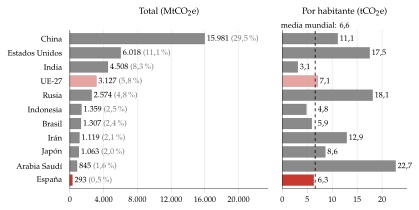
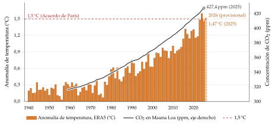
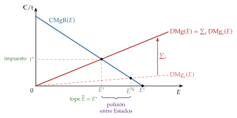
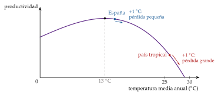
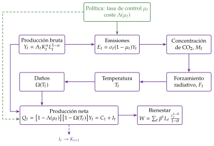
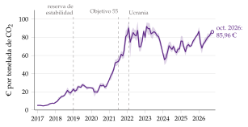
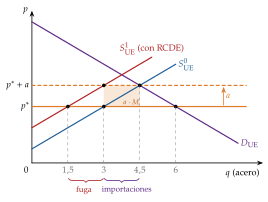

Tema 3.B.31
El cambio climático y su impacto en la economía. Evidencia y modelos integrados de evaluación. Acuerdos internacionales y principales medidas adoptadas para hacer frente al cambio climático.
Externalidad climática, evidencia de daños, coste social del carbono, modelo DICE de Nordhaus, descuento de Stern, clubes climáticos, Kioto, París, RCDE y MAFC.
Exclusivo Material exclusivo de victorgutierrezmarcos.es y la app Oposición TCEE · DCE. Puedes usarlo libremente para tu estudio personal. No se autoriza su incorporación a otras plataformas, aplicaciones o servicios. Condiciones de uso.
Introducción
Enganche:
«Quien siembra vientos recoge tempestades», dice el refrán. Con el clima, el que siembra y el que recoge no son la misma persona: emite una generación y sufre las consecuencias la siguiente; emite un país y las padecen todos.
Según el servicio europeo Copernicus, 2024 fue el primer año natural en que la temperatura media del planeta superó en más de 1,5 °C la de la era preindustrial (1850-1900), y 2023-2025, el primer trienio cuya media quedó por encima de ese umbral (Copernicus Climate Change Service, 2026). Y, sin embargo, el 27 de enero de 2026 el segundo mayor emisor del mundo, Estados Unidos, dejó de ser parte del Acuerdo de París (Secretario General de las Naciones Unidas (depositario), 2025).
A lo largo de la exposición seguiremos una sola tonelada de CO2: la que sale hoy por la chimenea de una acería. Veremos qué hace en la atmósfera, cuánto daño causa, cuánto vale ese daño y quién debería pagarlo.
Relevancia:
Teórica: el cambio climático reúne los fallos de mercado más difíciles de corregir: es una externalidad global, que se transmite entre generaciones, que se acumula y que está rodeada de incertidumbre. Para Nicholas Stern es «el mayor fallo de mercado que el mundo ha visto» (Stern, 2007), y en 2018 William Nordhaus recibió el Premio Nobel de Economía «por integrar el cambio climático en el análisis macroeconómico a largo plazo» (The Nobel Prize, 2018).
Práctica: poner precio al carbono ya es política económica corriente. Según el Banco Mundial, en 2026 funcionan 87 impuestos o mercados de carbono, que cubren casi el 30 % de las emisiones mundiales (Banco Mundial, 2026); en la UE, el derecho a emitir una tonelada se subastaba en octubre de 2026 a unos 85 € (European Energy Exchange, 2026), y desde el 1 de enero de 2026 ese precio se cobra también a ciertas importaciones con el Mecanismo de Ajuste en Frontera por Carbono (Parlamento Europeo y Consejo de la Unión Europea, 2023c).
Para el economista del Estado: la política climática toca la fiscalidad [ver tema 4.B.13], la política comercial [ver tema 3.B.41], el presupuesto de la UE [ver tema 3.B.37] y la política energética española [ver tema 4.A.6], y se negocia cada año en las Conferencias de las Partes.
Contextualización. Desde un punto de vista histórico:
La preocupación por los límites naturales del crecimiento es tan antigua como la economía: Thomas Malthus (1798) temía que la población creciera más deprisa que los alimentos, y el informe al Club de Roma (Meadows et al., 1972) anunció un colapso por agotamiento de recursos y contaminación. La respuesta neoclásica (Solow, 1974; Stiglitz, 1974) fue que la sustitución entre factores y el progreso técnico pueden sostener el crecimiento con recursos finitos [ver tema 3.A.43].
La física del efecto invernadero es del siglo XIX: Svante Arrhenius (1896) calculó cuánto se calentaría la Tierra si se duplicara el CO2 del aire. En 1987, la Comisión Brundtland definió el desarrollo sostenible como el que atiende las necesidades del presente sin comprometer la capacidad de las generaciones futuras de atender las suyas (Comisión Mundial sobre el Medio Ambiente y el Desarrollo, 1987), y en 1988 la ONU creó el Grupo Intergubernamental de Expertos sobre el Cambio Climático (IPCC, por sus siglas en inglés).
En la Cumbre de la Tierra de Río de Janeiro (1992) se abrió a la firma la Convención Marco de las Naciones Unidas sobre el Cambio Climático (CMNUCC), cuyas Conferencias de las Partes (COP) se reúnen desde 1995 (Naciones Unidas, 1992).
La economía del clima como disciplina nace con el modelo DICE de W. D. Nordhaus (1992), que mete el clima en un modelo de crecimiento óptimo; el informe de Stern (2007) la llevó al debate público, y en los últimos 15 años la econometría del clima (Dell, Jones y Olken, 2014) ha cambiado lo que sabemos de sus daños.
Problemática (preguntas clave):
¿Por qué el mercado emite demasiado, qué distingue al clima de otras externalidades y por qué canales llega el daño a la economía?
¿Cuánto daña el cambio climático a la economía y cuánto vale hoy evitar una tonelada de CO2? ¿Por qué esa cifra depende tanto de la tasa de descuento y de la incertidumbre?
Si a todos les conviene reducir emisiones, ¿por qué los acuerdos internacionales han logrado tan poco y qué medidas funcionan?
Estructura. La exposición sigue las 3 partes del título, que son las 3 preguntas de la problemática:
En el bloque I, qué es el cambio climático, por qué es un problema económico (una externalidad global, entre generaciones y con incertidumbre) y por qué canales afecta a la economía.
En el bloque II, cuánto la afecta: la evidencia empírica y los modelos integrados de evaluación, con el DICE de Nordhaus y el debate sobre el descuento.
En el bloque III, qué hacer y por qué cuesta tanto hacerlo: los instrumentos, el problema de la cooperación entre países, los acuerdos internacionales y las medidas adoptadas, en especial el Mecanismo de Ajuste en Frontera por Carbono de la UE.
El orden va del diagnóstico a la medida y a la cura: sin saber por qué falla el mercado no se entiende la cifra, y sin la cifra no se sabe cuánto pedir a los acuerdos.
3.B.31. El cambio climático y su impacto en la economía
Introducción
I. El cambio climático y su impacto en la economía
1. El fenómeno físico: \(+1{,}4\) °C, CO2 acumulado, presupuesto de carbono, IPCC
2. Problema económico: \(\mathrm{DMg}(E)=\sum_i\mathrm{DMg}_i(E)\); \(E^c>E^{\mathrm{N}}>E^*\)
3. Canales: riesgos físicos y de transición
II. Evidencia y modelos integrados de evaluación
1. Evidencia: corte transversal, panel, temperatura global
2. Modelos integrados y coste social del carbono
3. DICE: \(Q_t=[1-\Lambda(\mu_t)][1-\Omega(T_t)]Y_t\); \(r_s=\rho+\theta\gamma_c\)
III. Acuerdos internacionales y principales medidas
1. Instrumentos: precio, cantidad, adaptación
2. Cooperación: dilema del prisionero y clubes climáticos
3. Acuerdos: CMNUCC, Kioto, París
4. Medidas: UE, RCDE y MAFC
Conclusión
Reparto del cante:
introducción, 2′30″;
I, 7′30″ (I.1, 1′30″; I.2, 2′; I.3, 4′);
II, 9′ (II.1, 2′30″; II.2, 1′30″; II.3, 5′);
III, 9′30″ (III.1, 1′30″; III.2, 1′30″; III.3, 2′30″; III.4, 4′);
conclusión, 1′30″.
Los 3 bloques pesan casi lo mismo, como en el título; dentro del tercero, el Mecanismo de Ajuste en Frontera por Carbono se lleva unos 2′. Los gráficos imprescindibles son:
el de las emisiones óptimas, que se queda en la pizarra todo el cante (gráfico 3);
la U invertida de la temperatura y la productividad (gráfico 4);
el esquema del DICE con su problema de optimización y la fórmula del descuento (gráfico 5);
la matriz del dilema entre países y su versión con el club (tablas 4 y 5);
el del Mecanismo de Ajuste en Frontera por Carbono (gráfico 7).
Las series de datos y los anexos son para las preguntas del tribunal. Conviene escribir este esquema en la pizarra al empezar. El ejemplo de la tonelada de CO2 de la acería vuelve en cada bloque, siempre en una viñeta propia.
I. El cambio climático y su impacto en la economía
En el cante: el fenómeno físico, de palabra y con 3 cifras en una esquina de la pizarra (temperatura, concentración y presupuesto de carbono); el gráfico de la temperatura y el CO2 no se dibuja (1′30″). El gráfico de las emisiones óptimas, por capas, con los 5 rasgos que hacen singular al clima dichos de palabra; se queda en la pizarra hasta el final (2′). Los canales, en la tabla de riesgos físicos y de transición, que se borra al acabar el bloque (4′).
Empezamos por lo que dice la ciencia del clima, porque de su rasgo físico central, que el CO2 se acumula en la atmósfera, nacen casi todas las dificultades económicas.
Conclusión anticipada: el cambio climático es una externalidad global, entre generaciones y acumulativa, que afecta a la economía por la oferta (factores y productividad), por los precios, por el sistema financiero y por la distribución; y sus costes recaen sobre todo en los países pobres y cálidos.
I.1. El fenómeno físico y su evidencia
La CMNUCC entiende por cambio climático el cambio del clima atribuido directa o indirectamente a la actividad humana, que altera la composición de la atmósfera mundial y se suma a la variabilidad natural observada en periodos comparables (Naciones Unidas, 1992, art. 1).
El mecanismo: el efecto invernadero.
La Tierra recibe la radiación del Sol y devuelve al espacio radiación infrarroja. Los gases de efecto invernadero (GEI) retienen parte de esa radiación de vuelta y calientan la superficie. Sin ellos el planeta sería mucho más frío; el problema es el efecto invernadero añadido por las emisiones humanas.
Los principales son el dióxido de carbono (CO2), el metano, el óxido nitroso y los gases fluorados. Se suman en toneladas de CO2 equivalente (CO2e), según lo que calienta cada uno.
En 2025 el mundo emitió unos 54.100 millones de toneladas de CO2e, un 0,7 % más que en 2024 (Crippa et al., 2026); el CO2 de los combustibles fósiles, unos 38.000 millones, marcó otro récord y es por sí solo unas 7 de cada 10 de esas toneladas (Global Carbon Project, 2025; Crippa et al., 2026).
Las causas: la quema de combustibles fósiles (energía, industria, transporte), algunos procesos industriales (el cemento), la agricultura y la deforestación. Las causas naturales, como la actividad solar o los volcanes, no explican el calentamiento observado: el IPCC concluyó en su sexto informe que el calentamiento, de 1,1 °C en 2011-2020 respecto a 1850-1900, se debe de forma inequívoca a la actividad humana (IPCC, 2023).
Quién emite: China emite casi el 30 % de los GEI del mundo, Estados Unidos el 11 %, la India el 8 % y la UE menos del 6 %; pero por habitante un estadounidense emite 17,5 toneladas, un europeo 7,1 y un indio 3,1 (Crippa et al., 2026) (gráfico 1).

Fuente: elaboración propia con datos de EDGAR (Crippa et al., 2026). Sin usos del suelo; el total mundial incluye la aviación y el transporte marítimo internacionales. España incluye Andorra (agregado de EDGAR).
Los hechos:
la concentración de CO2 alcanzó en 2025 un récord de 426,8 partes por millón (ppm), un 53 % más que antes de la Revolución Industrial (Organización Meteorológica Mundial, 2026);
según Copernicus, 2025 fue el tercer año más cálido registrado, 1,47 °C por encima de 1850-1900, tras el récord de 2024, con 1,60 °C (Copernicus Climate Change Service, 2026) (gráfico 2);
con los métodos del IPCC, el calentamiento de origen humano llegaba ya a 1,37 °C en 2025 y avanza a unos 0,27 °C por década (Forster, Walsh, et al., 2026).

Fuente: elaboración propia con datos de Copernicus (ERA5) y de la NOAA (Mauna Loa) (Copernicus Climate Change Service, 2026; National Oceanic and Atmospheric Administration, Global Monitoring Laboratory, 2026). 2026, hasta el 29 de octubre; provisional.
El rasgo físico que importa para la economía: el CO2 es un stock.
Parte del CO2 emitido sale de la atmósfera en unas décadas, hacia el océano y la biosfera, pero otra parte se queda en ella durante siglos.
Por eso el calentamiento es, aproximadamente, proporcional a las emisiones acumuladas: cada billón de toneladas de CO2 añade unos 0,45 °C (IPCC, 2021).
La consecuencia es que, para estabilizar la temperatura, no basta con emitir menos: hay que llegar a emisiones netas nulas, y el nivel en que se estabilice dependerá de lo acumulado hasta entonces.
El presupuesto de carbono es lo que aún se puede emitir sin pasar de un umbral. Para tener un 50 % de probabilidad de no superar 1,5 °C, a principios de 2026 quedaban unos 130.000 millones de toneladas de CO2, unos 3 años al ritmo actual (Forster, Walsh, et al., 2026); el IPCC calculaba 500.000 millones desde 2020 (IPCC, 2023).
Volvamos a nuestra tonelada de la acería. Por sí sola apenas calienta, pero se suma a todas las demás, gasta un trozo de ese presupuesto y una parte de ella seguirá en el aire dentro de varios siglos. Es un daño pequeño, duradero y repartido por todo el planeta.
Los efectos (IPCC, 2023):
fenómenos extremos más frecuentes e intensos: olas de calor, lluvias torrenciales, sequías e incendios;
un mar más alto y más ácido;
daños en los ecosistemas y pérdida de biodiversidad;
efectos en la salud (mortalidad por calor, enfermedades) y en los sectores más expuestos: agricultura, pesca, turismo y energía.
Los puntos de inflexión: algunos subsistemas de la Tierra pueden cambiar de estado de forma brusca e irreversible si se supera un umbral (los mantos de hielo de Groenlandia y de la Antártida occidental, el permafrost, los arrecifes de coral, la circulación del Atlántico), y varios podrían activarse entre 1,5 y 2 °C (Armstrong McKay et al., 2022). Según el informe de 2025 sobre puntos de inflexión, los arrecifes de coral de aguas cálidas ya han cruzado el suyo, en torno a 1,2 °C (Lenton et al., 2025). Son la razón física de la incertidumbre de cola que veremos en el bloque II.
Proyecciones: con las políticas en vigor, el mundo va hacia unos 2,8 °C en 2100, y hacia 2,3-2,5 °C si se cumplen todas las contribuciones anunciadas (Programa de las Naciones Unidas para el Medio Ambiente, 2025). El sexto informe del IPCC (2021-2023) es la referencia vigente; el séptimo se está redactando y su síntesis se espera para 2029.
Esta es la evidencia física; la evidencia económica de los daños la veremos en el apartado II.1. Antes hay que entender por qué un fenómeno físico es un problema económico.
I.2. El cambio climático como problema económico
El diagnóstico: una externalidad negativa
Emitir GEI es una externalidad negativa: el bienestar de unos depende directamente de lo que hacen otros, sin pasar por los precios [ver tema 3.A.23].
La acería iguala el precio a su coste marginal privado, \(\mathrm{CMgP}\), y no tiene en cuenta el coste marginal externo, \(\mathrm{CMgE}\), que su CO2 impone a los demás. El coste marginal social es \(\mathrm{CMgS}=\mathrm{CMgP}+\mathrm{CMgE}\), y el mercado produce, y emite, más de lo óptimo.
Falla un supuesto del primer teorema fundamental de la economía del bienestar (1TFEB), el de mercados completos: sin externalidades, el equilibrio competitivo es un óptimo de Pareto; con ellas, no [ver tema 3.A.22].
El \(\mathrm{CMgE}\) de una tonelada de CO2 tiene nombre propio: es el coste social del carbono (CSC), que estudiaremos en el apartado II.2.
Las emisiones óptimas y la suma de los daños
Para ver qué añade el clima a una externalidad de libro, pasamos el análisis del mercado del bien a las emisiones. En el eje horizontal, las emisiones anuales de CO2, \(E\); en el vertical, euros por tonelada (gráfico 3):
\(\mathrm{CMgR}(E)\), decreciente, es el coste marginal de reducción: lo que cuesta dejar de emitir la última tonelada cuando se emite \(E\). Es, por tanto, el beneficio marginal de emitir. Se anula en \(E^c\), las emisiones sin ninguna política;
\(\mathrm{DMg}_i(E)\), creciente, es el daño marginal que sufre un país \(i\) con cada tonelada más;
\(\mathrm{DMg}(E)=\sum_i\mathrm{DMg}_i(E)\) es el daño marginal mundial: como una tonelada calienta igual se emita donde se emita, sus daños se suman en vertical entre países, igual que las valoraciones de un bien público en la condición de Samuelson y Bowen [ver tema 3.A.23].
Es el gráfico de la negociación de Coase [ver tema 3.A.23] con 2 cambios: en el eje horizontal están las emisiones, y el daño marginal que cuenta es la suma de los daños de todos los países. Cada país solo tiene en cuenta el suyo; el resto del daño es una externalidad que exporta a los demás.
Salen 3 niveles de emisiones (con países iguales, para simplificar):
\(E^c\): nadie hace nada, porque nadie paga por emitir;
\(E^{\mathrm{N}}\): cada país reduce hasta que su coste marginal de reducción iguala su propio daño marginal, \(\mathrm{CMgR}=\mathrm{DMg}_i\). Es el equilibrio de Nash entre Estados;
\(E^*\): el óptimo mundial, donde \(\mathrm{CMgR}(E^*)=\mathrm{DMg}(E^*)\).
Se cumple \(E^c>E^{\mathrm{N}}>E^*\): aunque cada país haga lo que le conviene, el mundo emite demasiado. La distancia entre \(E^{\mathrm{N}}\) y \(E^*\) es el problema del polizón entre Estados.
El precio que lleva a \(E^*\) es \(t^*=\mathrm{DMg}(E^*)\), el impuesto pigouviano por tonelada; es la misma idea que \(t^*=\mathrm{CMgE}(q^*)\) en el mercado del bien [ver tema 3.A.23]. Ese daño marginal en el óptimo es el coste social del carbono (apartado II.2), y un tope de emisiones \(\overline{E}=E^*\) lograría lo mismo si no hubiera incertidumbre (apartado III.1).

Fuente: elaboración propia a partir del gráfico de Coase de [ver tema 3.A.23], Samuelson (1954) y W. Nordhaus (2015).
Volvamos a nuestra tonelada. Si la acería está en \(E^c\), la emite porque no le cuesta nada; si su país aplica su propio interés (\(E^{\mathrm{N}}\)), quizá la evite, pero solo si reducirla le sale más barato que el daño que sufre su país, una fracción pequeña del total. Solo un precio igual al daño mundial, \(t^*\), la hace pagar lo que de verdad cuesta.
Por qué es la externalidad más difícil
El clima tiene 5 rasgos que rara vez se dan juntos:
Global. Reducir emisiones es un bien público global, no rival y no excluible, y su provisión depende de la suma de esfuerzos de todos los países (Hirshleifer, 1983). Cada país paga el coste de lo que reduce y disfruta solo de una pequeña parte del beneficio: le conviene ser polizón. Y no existe un gobierno mundial que pueda imponer un impuesto (Kindleberger, 1986). La atmósfera es también un común global, con su tragedia de los comunes [ver tema 3.A.23].
Entre generaciones. Quien paga hoy por reducir no es quien disfrutará del clima evitado dentro de 50 o 100 años. Proteger a las generaciones futuras es uno de los motivos clásicos para intervenir [ver tema 3.A.20], pero comparar su bienestar con el nuestro exige una tasa de descuento, y ahí está el gran debate normativo del tema (apartado II.3).
Acumulativa e irreversible. El daño depende del stock y no del flujo, y algunos efectos no tienen vuelta atrás. Con irreversibilidad e incertidumbre conviene ser más prudente de lo que diría un cálculo con valores esperados, porque esperar a saber más tiene un valor de opción (Arrow y Fisher, 1974).
Incierta. No sabemos con precisión cuánto calentará una duplicación del CO2, cuánto daño hará cada grado ni cuándo se cruzará un punto de inflexión, y la incertidumbre se concentra en las colas.
Desigual. Los países que más han emitido, los ricos, no son los que más sufren, los pobres y cálidos. De ahí el principio de responsabilidades comunes pero diferenciadas (Naciones Unidas, 1992, art. 3.1).
Consecuencia: hay que intervenir, pero las soluciones de manual suponen un Estado capaz de imponerlas (el impuesto de Pigou) o pocos afectados que puedan negociar (Coase). Con casi 200 Estados soberanos y generaciones que aún no han nacido, no se da ni lo uno ni lo otro. W. Nordhaus (2015) lo llama el dilema de Westfalia, y es el problema del bloque III.
I.3. Canales de impacto en la economía
Una vez visto por qué el mercado emite demasiado, pasamos a analizar por dónde llega el daño a la economía. Los bancos centrales lo ordenan en 2 tipos de riesgo desde Carney (2015) y la Red de Bancos Centrales y Supervisores para la Ecologización del Sistema Financiero (NGFS, por sus siglas en inglés) (Network for Greening the Financial System, 2019):
riesgos físicos: los daños del propio clima, agudos (una dana, un huracán, una ola de calor) o crónicos (más temperatura media, menos agua, subida del mar);
riesgos de transición: los costes de pasar a una economía baja en carbono por cambios en la política (un precio del carbono), en la tecnología o en las preferencias. Son mayores cuanto más tarde y más bruscamente se haga la transición.
Los 2 riesgos llegan a la economía por 5 canales, que resume la tabla 1.
| Canal | Riesgos físicos | Riesgos de transición |
|---|---|---|
| Crecimiento | menos horas y productividad del trabajo; capital destruido; peor productividad agrícola | activos varados; inversión que se desvía; cambio de la estructura productiva |
| Precios | choques de oferta en alimentos y energía (climateflation) | precio del carbono y demanda de metales (greenflation) |
| Estabilidad financiera | pérdidas de aseguradoras e impagos | caída del valor de los activos intensivos en carbono |
| Política económica | gasto de emergencia; choques que complican la política monetaria | inversión pública, subvenciones e ingresos del carbono |
| Desigualdad | pierden más los países y hogares pobres | el precio del carbono es regresivo si no se compensa |
Fuente: elaboración propia a partir de Carney (2015), Network for Greening the Financial System (2019) y Schnabel (2022).
I.3.1. Crecimiento económico
Con una función de producción \(Y_t=A_tK_t^{\alpha}L_t^{1-\alpha}\) [ver tema 3.A.45], el clima afecta a los 3 términos:
Trabajo: el calor reduce las horas y la productividad del trabajo al aire libre y empeora la salud; los fenómenos extremos y la escasez de agua desplazan población.
Capital: los desastres lo destruyen y aceleran su depreciación; la transición deja activos varados, centrales, yacimientos o máquinas que pierden su valor antes de tiempo. Para tener un 50 % de probabilidad de no pasar de 2 °C, habría que dejar sin usar un tercio de las reservas de petróleo, la mitad de las de gas y más del 80 % de las de carbón (McGlade y Ekins, 2015).
Productividad total de los factores: menos rendimiento agrícola, más cortes en las cadenas de suministro y recursos que pasan de innovar a reparar daños.
¿Efecto nivel o efecto crecimiento? Es la pregunta clave:
si el calor reduce el nivel del PIB, el daño es acotado;
si reduce su tasa de crecimiento, se acumula año tras año y a largo plazo puede ser enorme.
La evidencia de panel apunta a efectos sobre el crecimiento en los países pobres (Dell, Jones y Olken, 2012), y por eso las estimaciones de daños de la última década son mucho mayores que las de los primeros modelos (apartado II.1).
I.3.2. Estabilidad macroeconómica y de precios
Los fenómenos extremos son choques de oferta más frecuentes, más grandes y más difíciles de prever, que suben los precios y bajan la producción a la vez: la peor combinación para la política monetaria [ver tema 3.A.36].
Isabel Schnabel (2022) distingue 3 presiones sobre los precios:
climateflation: el encarecimiento de la comida y de la energía que causan los fenómenos climáticos;
fossilflation: la que viene de depender de los combustibles fósiles, como en 2022 (Schnabel, 2022);
greenflation: la que provoca la propia transición, por la mayor demanda de metales y minerales con una oferta rígida y por el precio del carbono.
I.3.3. Estabilidad financiera
Mark Carney (2015) habló de la tragedia del horizonte: los daños llegarán más allá del horizonte en que deciden los inversores, los supervisores y los políticos, y por eso hoy no se valoran bien.
Los 2 riesgos llegan a los balances:
los físicos, por las pérdidas de las aseguradoras y los impagos de los prestatarios afectados;
los de transición, por la caída del valor de los activos intensivos en carbono.
Si se materializan de golpe, pueden ser sistémicos.
La respuesta: los bancos centrales y supervisores crearon en 2017 la NGFS, que publica escenarios climáticos, y el Banco Central Europeo (BCE) hizo en 2022 su primera prueba de resistencia climática a los bancos (Banco Central Europeo, 2022).
I.3.4. Eficacia de la política fiscal y monetaria
Fiscal: los desastres exigen gasto de emergencia y de reconstrucción, y la transición, inversión pública y subvenciones, con el riesgo de una carrera de subvenciones entre bloques como la que abrió en 2022 la Ley de Reducción de la Inflación de Estados Unidos (Congreso de los Estados Unidos, 2022); a cambio, el precio del carbono recauda [ver tema 4.B.13].
Monetaria: los choques de oferta más frecuentes complican la disyuntiva entre inflación y actividad; el clima puede mover el tipo de interés natural, por el ahorro por precaución y por la inversión que exige la transición [ver tema 3.A.40]; y los bancos centrales discuten hasta dónde llega su mandato. El BCE incluyó el clima en su estrategia de 2021 (Banco Central Europeo, 2021).
I.3.5. Desigualdad
Entre países: los países pobres son más cálidos, más agrícolas y tienen menos medios para adaptarse, así que pierden más (Burke, Hsiang y Miguel, 2015) [ver tema 3.B.28]. Y han emitido menos: el 10 % de la población mundial que más emite produce casi la mitad de las emisiones (Chancel, 2022).
Dentro de cada país: el precio del carbono es regresivo si no se compensa, porque los hogares pobres gastan en energía una parte mayor de su renta; las protestas de los «chalecos amarillos» contra la subida de los carburantes en Francia (2018) lo mostraron (Douenne y Fabre, 2022). De ahí los fondos de transición justa y el Fondo Social para el Clima de la UE (apartado III.4).
España: por su clima y su geografía, el sur de Europa es la zona europea más expuesta al calor, la sequía y los incendios (Agencia Europea de Medio Ambiente, 2024); el Plan Nacional de Adaptación al Cambio Climático 2021-2030 recoge los riesgos y las medidas (Ministerio para la Transición Ecológica y el Reto Demográfico, 2020) [ver tema 4.A.6].
Recapitulación: el cambio climático es una externalidad singular, global, entre generaciones, acumulativa, incierta y desigual, que afecta a casi todo lo que estudia la macroeconomía.
Volvamos a la acería. Su tonelada no solo calienta: puede encarecer los alimentos dentro de unos años, restar valor a los hornos de carbón de la propia acería cuando llegue un precio del carbono y pesar más sobre un agricultor del Sahel que sobre un ahorrador europeo.
Pero, ¿cuánto pesa todo esto? Para responder hay que medir. Una vez estudiados el fenómeno y sus canales, pasamos a analizar qué dice la evidencia y cómo se traduce en los modelos que guían la política.
II. Evidencia y modelos integrados de evaluación
En el cante: la evidencia ordenada por método, con la U invertida dibujada en unos segundos (2′30″); la definición del coste social del carbono con su fórmula y las 2 familias de modelos, de palabra (1′30″); el DICE con el esquema por capas, su problema de optimización como función clave, la condición del óptimo dicha con el gráfico de las emisiones óptimas y la fórmula de Ramsey del descuento con las calibraciones de Stern y Nordhaus (5′). El problema del DICE y \(r_s=\rho+\theta\gamma_c\) se quedan en una esquina de la pizarra hasta la conclusión. La tabla del descuento y las cajas grises son de apoyo; las ecuaciones del módulo climático y los resultados completos, en el anexo A.
Para decidir cuánto reducir hay que comparar lo que cuesta reducir con el daño que se evita. El daño se mide con la evidencia empírica y se proyecta con los modelos integrados de evaluación, que juntan economía y clima en un solo marco. La evidencia física la hemos visto en el apartado I.1; aquí, la económica.
Conclusión anticipada: la evidencia reciente apunta a daños mayores de lo que se creía, y los modelos dan un coste social del carbono positivo y creciente, pero muy sensible a 2 juicios: la tasa de descuento y el trato de las catástrofes.
II.1. Evidencia empírica del impacto económico
Corte transversal: países cálidos, países pobres
Los países más cálidos son, de media, más pobres:
entre países, la renta nacional es un 8,5 % menor por cada grado más de temperatura media (Dell, Jones y Olken, 2009);
la geografía (temperatura, lluvia, distancia al mar) explica en torno a un 20 % de la diferencia de producto por habitante entre el África tropical y las regiones industriales (W. D. Nordhaus, 2006).
Problema: correlación no es causalidad. El clima va de la mano de las instituciones, de la historia colonial o de las enfermedades, y dentro de cada país la relación entre temperatura y renta es mucho más débil (Dell, Jones y Olken, 2009).
Datos de panel: el tiempo de cada año como experimento natural
La econometría del clima compara a cada país consigo mismo en años más cálidos y más fríos de lo normal, con efectos fijos de país y de año. Como las desviaciones del tiempo meteorológico son aleatorias, permiten identificar efectos causales (Dell, Jones y Olken, 2014; Hsiang, 2016).
Dell, Jones y Olken (2012): en los países pobres, un año 1 °C más cálido reduce el crecimiento de ese año en unos 1,3 puntos porcentuales; en los ricos no hay un efecto claro. El efecto llega por la agricultura, pero también por la industria y la inestabilidad política, y es sobre el crecimiento, no solo sobre el nivel.
Burke, Hsiang y Miguel (2015): la relación es no lineal y es la misma para ricos y pobres (gráfico 4):
la productividad es máxima con una temperatura media anual de unos 13 °C y cae con fuerza por encima;
los países ricos no son inmunes: simplemente están, de media, en zonas más frías;
con un calentamiento sin mitigar, la renta media mundial sería en 2100 un 23 % menor que sin cambio climático, y la desigualdad entre países aumentaría.

Fuente: elaboración propia a partir de Burke, Hsiang y Miguel (2015). Curva estilizada.
Volvamos a nuestra tonelada. El grado de más al que contribuye no pesa igual en todas partes: a un país templado como España, cerca de la cima de la curva, le resta poco al principio; a un país tropical, ya en la parte que cae, le resta mucho desde el primer momento.
Bilal y Känzig (2026) usan la temperatura global y no la de cada país, porque se relaciona mejor con los fenómenos extremos y recoge efectos que la local no ve (comercio, contagio entre países):
un grado más de temperatura global reduciría el PIB mundial más de un 20 % a largo plazo, un orden de magnitud por encima de las estimaciones anteriores;
su coste social del carbono supera los 1.200 $ por tonelada.1
Desastres naturales
Los daños de los huracanes en Estados Unidos crecen con la novena potencia de la velocidad del viento, y el calentamiento los aumentaría en unos 10.000 millones de dólares al año, en torno al 0,08 % del PIB (W. D. Nordhaus, 2010). El daño medio es pequeño, pero se concentra en pocos episodios enormes.
Límites de la evidencia
El tiempo no es el clima: un año caluroso no es un clima más cálido. Ante un cambio permanente, la sociedad se adapta, y el daño sería menor; pero también se acumulan efectos que un año suelto no muestra, y sería mayor.
Extrapolación: los datos cubren el clima de los últimos 60 años; nadie ha visto una economía con 3 °C más ni un punto de inflexión.
Canales que faltan: la subida del mar, la biodiversidad, las migraciones o los conflictos apenas aparecen en el PIB de un año.
Fragilidad: los resultados dependen de la calidad de los datos. Un artículo de Nature muy citado, que preveía una caída de la renta mundial del 19 % hacia 2050, fue retirado por la revista en diciembre de 2025, porque sus resultados cambiaban al corregir los datos erróneos de un solo país (Kotz, Levermann y Wenz, 2025).
Conclusión: la evidencia dice que los daños son importantes, no lineales y mayores en los países pobres. Para proyectarlos y compararlos con el coste de evitarlos hacen falta modelos, que pasamos a analizar.
II.2. Los modelos integrados de evaluación y el coste social del carbono
Los modelos integrados de evaluación (MIE; integrated assessment models, IAM), también llamados modelos de evaluación integrada, unen en un solo marco un módulo económico (producción, emisiones y coste de reducirlas) y un módulo climático (concentración, temperatura y daños), y cierran el círculo: la economía emite, las emisiones calientan y el calentamiento daña a la economía. Son el laboratorio en el que se prueban las políticas climáticas.
Hay 3 tipos:
De optimización, agregados y con función de daños: buscan la senda óptima y calculan el coste social del carbono. Los 3 clásicos son el DICE y su versión por regiones, el RICE, de Nordhaus; el FUND de Tol y Anthoff (Anthoff y Tol, 2013), y el PAGE de Hope (Hope, 2006).
De simulación, con mucho detalle tecnológico y sectorial (IMAGE, GCAM, MESSAGE, REMIND): no valoran los daños, sino que buscan la forma más barata de cumplir un objetivo, como 1,5 o 2 °C. Son los que usa el IPCC para sus escenarios.
Los modelos de equilibrio general computable (MEGC): evalúan políticas concretas, como el efecto sectorial del mercado de derechos de emisión o del ajuste en frontera, pero no optimizan el bienestar a lo largo del tiempo. El DICE no es un MEGC multisectorial, sino un modelo integrado de crecimiento óptimo [ver tema 3.A.21].
El coste social del carbono (CSC; social cost of carbon, SCC) es el valor actual, en unidades de consumo de hoy, de los daños que causa una tonelada más de CO2 emitida en \(t\): \[\tag{1} \mathrm{CSC}_t\equiv-\frac{\partial W/\partial E_t}{\partial W/\partial C_t}\simeq\sum_{j=0}^{\infty}\frac{1}{(1+r_s)^{j}}\,\frac{\partial\left[\Omega(T_{t+j})\,Y_{t+j}\right]}{\partial E_t},\] con \(W\) el bienestar social, \(\Omega(T)\,Y\) el daño en bienes y \(r_s\) la tasa social de descuento. Es el \(\mathrm{CMgE}\) de una tonelada, el daño marginal mundial del gráfico 3.
Para qué sirve: en el óptimo es el impuesto pigouviano por tonelada, \(t^*_t=\mathrm{CSC}_t\); y sirve para el análisis coste-beneficio de cualquier regulación o inversión que cambie las emisiones [ver tema 4.B.6].
Cuánto vale:
el DICE-2023 lo estima en 66 $ por tonelada para las emisiones de 2020 con las políticas actuales, y en 50 $ en la senda óptima, en dólares de 2019 (Barrage y Nordhaus, 2024);
la Agencia de Protección del Medio Ambiente de Estados Unidos (EPA) lo elevó en 2023 a 190 $, con un descuento del 2 % y la nueva literatura de daños (U.S. Environmental Protection Agency, 2023; Rennert et al., 2022);
en 2025, la nueva Administración dejó de usar una cifra oficial y limitó el análisis de las emisiones a lo que exija la ley (Office of Management and Budget, 2025): el coste social del carbono es también una decisión política.
Volvamos a la tonelada de la acería: según el modelo y el descuento, el daño que causa vale entre 50 y 190 $. Si nadie lo paga, el acero sale barato para la acería y caro para el mundo.
El informe Stern, encargado por el Gobierno británico y basado en el PAGE, concluyó que no actuar costaría el equivalente a perder al menos un 5 % del PIB mundial cada año, ahora y siempre, y hasta un 20 % o más con una visión amplia de los riesgos, mientras que actuar costaría en torno a un 1 % del PIB al año (Stern, 2007). Pedía actuar fuerte y pronto, al contrario que Nordhaus. Por qué discrepaban es la pregunta del modelo que sigue.
II.3. El modelo DICE de Nordhaus
a) Idea
El modelo DICE (Dynamic Integrated model of Climate and the Economy) de William W. D. Nordhaus (1992) es el modelo de crecimiento óptimo de Ramsey, Cass y Koopmans con 2 añadidos: los daños del clima y la posibilidad de reducir emisiones [ver tema 3.A.43].
La intuición: la sociedad puede renunciar a consumo hoy para tener más mañana de 2 maneras:
invirtiendo en capital físico;
invirtiendo en capital natural, es decir, reduciendo emisiones hoy para tener menos daños mañana.
El modelo elige la mejor combinación de las 2.
La versión actual es la DICE-2023 (Barrage y Nordhaus, 2024), que usamos en lo que sigue.
b) Modelo
i) Supuestos
Un planificador mundial con un solo bien, que se consume o se invierte, en periodos de 5 años; población \(L_t\) y productividad total de los factores \(A_t\) exógenas, crecientes y que se frenan con el tiempo.
Producción bruta Cobb-Douglas, \(Y_t=A_tK_t^{\alpha}L_t^{1-\alpha}\), con una participación del capital \(\alpha=0{,}3\), y depreciación \(\delta\) (Barrage y Nordhaus, 2023).
Daños: una fracción \(\Omega(T_t)\) de la producción, creciente y convexa en el aumento de la temperatura respecto a la era preindustrial, \(T_t\). En DICE-2023 es cuadrática, \(\Omega(T_t)\simeq0{,}0035\,T_t^2\): un 3,1 % del producto con 3 °C y un 7 % con 4,5 °C (Barrage y Nordhaus, 2024).
Reducción de emisiones: la sociedad elige la tasa de control \(\mu_t\in[0,1]\), la fracción de las emisiones que evita, y paga por ello una fracción \(\Lambda(\mu_t)=\vartheta_{1,t}\,\mu_t^{\vartheta_2}\) de la producción, creciente y muy convexa (\(\vartheta_2=2{,}6\)).
Emisiones: proporcionales a la producción, con una intensidad \(\sigma_t\) que baja con el tiempo, \(E_t=\sigma_t(1-\mu_t)Y_t\), más las de los usos del suelo.
Módulo climático: las emisiones se acumulan en la atmósfera, aumentan el forzamiento radiativo y, con retraso, la temperatura, \(T_t\). Sus ecuaciones están en el anexo A.
Preferencias: utilidad isoelástica del consumo por habitante, \(c_t\equiv C_t/L_t\), con elasticidad de la utilidad marginal \(\theta\), ponderada por la población y descontada con el factor \(\beta\equiv1/(1+\rho)\), donde \(\rho\) es la tasa de preferencia temporal pura.
Letras locales: aquí \(T_t\) es la temperatura (no la recaudación), \(\sigma_t\) la intensidad de emisiones (no la elasticidad de sustitución) y \(\mu_t\) la tasa de control (no el margen); \(\Omega\) y \(\Lambda\) son los daños y el coste de reducir, y \(\vartheta_1\), \(\vartheta_2\), los parámetros de ese coste, que en el artículo original llevan otra letra.

Fuente: elaboración propia a partir de Barrage y Nordhaus (2024).
ii) Desarrollo
El planificador elige en cada periodo la inversión y la tasa de control; \(\Phi\) resume el módulo climático, que hace depender la temperatura de todas las emisiones pasadas:
\[\begin{array}{rl}\displaystyle \max_{\{I_t,\,\mu_t\}} & \displaystyle W=\sum_{t=0}^{\infty}\beta^{t}\,L_t\,\frac{c_t^{1-\theta}}{1-\theta} \\ \text{s.a.} & Q_t\equiv\left[1-\Lambda(\mu_t)\right]\left[1-\Omega(T_t)\right]Y_t=C_t+I_t \\ & K_{t+1}=(1-\delta)K_t+I_t \\ & E_t=\sigma_t(1-\mu_t)Y_t \\ & T_t=\Phi(E_0,E_1,\dots,E_t)\end{array}\tag{2}\]
El dilema central: cada euro que se gasta en reducir (\(\Lambda\)) baja hoy la producción neta \(Q_t\); cada tonelada que se emite sube la temperatura y los daños (\(\Omega\)) en todos los periodos siguientes. La producción neta se reparte entre consumo e inversión, como en el modelo de Ramsey, Cass y Koopmans.
Condición de óptimo: se reduce hasta que el coste marginal de evitar la última tonelada iguala el daño que causa, el coste social del carbono (1). Con el coste de reducción del DICE, \[\tag{3} \underbrace{\frac{\vartheta_{1,t}\,\vartheta_2\,\mu_t^{\vartheta_2-1}}{\sigma_t}}_{\text{coste marginal de reducir}}=\mathrm{CSC}_t=t^*_t,\] y el precio del carbono óptimo \(t^*_t\) es ese CSC. Es la regla de Pigou, \(t^*=\mathrm{CMgE}(q^*)\), y la condición del mercado de derechos, \(\mathrm{CMgR}_j=p_E\) [ver tema 3.A.23]; en el gráfico 3, el corte de \(\mathrm{CMgR}\) con \(\mathrm{DMg}\).
El descuento: el CSC suma daños futuros descontados a la tasa de los bienes, \(r_s\). Por la ecuación de Euler con utilidad isoelástica, a lo largo de la senda óptima se cumple la fórmula de Ramsey del descuento (Ramsey, 1928):
\[r_s=\rho+\theta\,\gamma_c\tag{4}\]
donde \(\gamma_c\) es el crecimiento del consumo por habitante. Se descuenta el futuro por 2 motivos:
por impaciencia, \(\rho\);
porque las generaciones futuras serán más ricas (\(\gamma_c>0\)) y un euro les dará menos utilidad que a nosotros, tanto menos cuanto mayor sea la aversión a la desigualdad entre generaciones, \(\theta\).
De la ecuación de Euler a la fórmula de Ramsey del descuento. Con \(u(c)=c^{1-\theta}/(1-\theta)\), en el óptimo da igual consumir una unidad hoy o invertirla al tipo \(r\) y consumirla mañana: \[u'(c_t)=\frac{1+r}{1+\rho}\,u'(c_{t+1})\;\Longrightarrow\;\left(\frac{c_{t+1}}{c_t}\right)^{\theta}=\frac{1+r}{1+\rho}\;\Longrightarrow\;\theta\ln(1+\gamma_c)=\ln(1+r)-\ln(1+\rho),\] y, con tasas pequeñas, \(r\simeq\rho+\theta\gamma_c\). Leída al revés, es la ecuación de Euler del modelo de Ramsey, Cass y Koopmans, \(\gamma_c\simeq(r-\rho)/\theta\) [ver tema 3.A.43]. En la senda óptima, el rendimiento del capital neto de depreciación es esa tasa: por eso el DICE calibra sus parámetros para que \(r_s\) se parezca a los tipos de interés reales observados. No se llama «regla de Ramsey» para no confundirla con la regla de la imposición óptima del mismo autor.
iii) Implicaciones: los resultados de DICE-2023
Según Barrage y Nordhaus (2024):
Sin nuevas políticas, la temperatura sube 3,6 °C en 2100 respecto a la era preindustrial y los daños llegan al 4,4 % del producto.
La política óptima no lleva las emisiones a cero de golpe, sino que sigue una rampa: un precio del carbono que empieza moderado y sube con el tiempo, de 50 $ por tonelada en 2020 a 115 $ en 2050, con una tasa de control del 39 % en 2050 y del 84 % en 2100. La temperatura sube 2,6 °C en 2100 y los daños se quedan en el 2,3 %. La ganancia, unos 120 billones de dólares en valor actual, es algo menos que la producción mundial de un año.
El CSC no es el impuesto de cualquier senda: calculado con las políticas actuales vale 66 $, y en la senda óptima, 50 $, porque con menos emisiones el daño marginal es menor. El impuesto óptimo es el CSC de la senda óptima.
Los objetivos de París: limitar el calentamiento a 2 °C pasa el test de coste-beneficio solo con un descuento bajo o con daños más severos, y su CSC de 2020 es de 76 $; 1,5 °C ya no es alcanzable en el modelo.
El descuento lo decide casi todo: con una tasa constante del 5 %, el CSC de 2020 es de 32 $; con el 3 %, de 87 $; con el 2 %, de 176 $, y con el 1 %, de 485 $ (Barrage y Nordhaus, 2024). Los resultados completos están en el anexo A.
Volvamos a la tonelada de la acería: el DICE le pone hoy un precio de unos 50 $, que sube con el tiempo. Es lo que la acería debería pagar por ella, como impuesto o comprando un derecho de emisión.
c) Extensiones
Por regiones: el RICE divide el mundo en regiones con daños y costes distintos (W. D. Nordhaus y Yang, 1996) y muestra que los incentivos a reducir difieren mucho entre países, la raíz del problema de la cooperación.
Innovación endógena: en R&DICE (W. D. Nordhaus, 2002) y ENTICE (Popp, 2004), el precio del carbono induce innovación en tecnologías limpias.
Cambio técnico dirigido: Acemoglu et al. (2012) muestran que, si las tecnologías limpias y sucias son buenas sustitutas, la innovación se dirige a la que ya es mayor, la sucia. El óptimo combina un impuesto sobre el carbono con subvenciones a la investigación limpia; si la intervención es temprana, puede ser temporal, y retrasarla sale caro [ver tema 3.A.44].
Un impuesto óptimo sencillo: Golosov et al. (2014) llegan, en un modelo de equilibrio general dinámico y estocástico, a una fórmula cerrada (caja gris).
Coaliciones: el C-DICE, que W. Nordhaus (2015) usa para estudiar los clubes climáticos (apartado III.2).
El impuesto óptimo de Golosov, Hassler, Krusell y Tsyvinski (2014). Con utilidad logarítmica, daños proporcionales a la producción y una tasa de ahorro constante, el coste externo marginal de una tonelada de carbono, y por tanto el impuesto óptimo, es proporcional al PIB: \[\frac{t^*_t}{Y_t}=\bar\gamma\left[\frac{\varphi_L}{1-\beta}+\frac{(1-\varphi_L)\,\varphi_0}{1-(1-\varphi)\beta}\right],\] donde \(\bar\gamma\) es la elasticidad esperada de los daños a la concentración de carbono, \(\beta\) el factor de descuento, \(\varphi_L\) la fracción del carbono emitido que se queda para siempre en la atmósfera, \(1-\varphi_0\) la que sale enseguida y \(\varphi\) la tasa a la que se va el resto. Desaparecen la producción, el consumo y el carbono futuros: solo importan el descuento, los daños y la física del carbono. Con un descuento anual del 1,5 %, el impuesto es de unos 57 $ por tonelada de carbono (unos 15 $ por tonelada de CO2); con el 0,1 % de Stern, de 496 $ (Golosov et al., 2014). Aquí \(\bar\gamma\), \(\varphi\), \(\varphi_0\) y \(\varphi_L\) son letras locales del artículo: \(\varphi\) no es la inversa de la elasticidad de Frisch, ni \(\bar\gamma\) una tasa de crecimiento.
d) Evidencia empírica
La función de daños de DICE-2023 se calibra con la literatura de daños, que da un 1,6 % del producto con 3 °C, más un 1 % por los puntos de inflexión y un 0,5 % por los efectos omitidos: en total, un 3,1 % con 3 °C. Es casi el doble que en DICE-2016, y por eso el CSC ha subido (Barrage y Nordhaus, 2024).
Comparando modelos, las estimaciones del CSC son muy parecidas para un mismo descuento: la discrepancia viene sobre todo del descuento y de los daños, no de la estructura del modelo (Barrage y Nordhaus, 2024).
La evidencia de panel reciente (apartado II.1) sugiere daños sobre el crecimiento, mayores que los de la función cuadrática; con ella, el CSC de Bilal y Känzig (2026) es del orden de 20 veces el del DICE.
e) Valoración
El descuento: Stern frente a Nordhaus
«Pan para hoy, hambre para mañana», dice el refrán: es lo que Stern reprocha a un descuento alto.
2 enfoques:
Stern defiende un enfoque prescriptivo: por ética, todas las generaciones valen lo mismo, así que \(\rho\) debe ser casi 0 y solo recoger el riesgo de que la humanidad desaparezca (Stern, 2007);
Nordhaus defiende un enfoque descriptivo: \(\rho\) y \(\theta\) deben reproducir los tipos de interés reales que observamos; si no, la inversión climática rendiría menos que otras inversiones que también benefician a las generaciones futuras (W. D. Nordhaus, 2007).
La diferencia es enorme (tabla 2): 100 $ de daño dentro de 100 años valen hoy unos 25 $ con el descuento de Stern (1,4 %) y menos de 50 céntimos con el de Nordhaus (5,5 %).
\(\theta\) es a la vez la curvatura de la utilidad del consumidor representativo y la aversión a la desigualdad entre generaciones: la misma idea que el parámetro de aversión a la desigualdad de la función de bienestar social isoelástica y del índice de Atkinson [ver tema 3.A.24]. Con \(\theta\) alto, la sociedad pide más a las generaciones futuras, más ricas, que a la actual.
En una encuesta a más de 200 expertos, la tasa social de descuento a largo plazo recomendada tiene una mediana del 2 % y la mayoría acepta tasas entre el 1 y el 3 % (Drupp et al., 2018); con esos valores y la evidencia reciente sobre daños, el óptimo del DICE se acerca a los objetivos de París (Hänsel et al., 2020). Las guías oficiales de evaluación usan tasas decrecientes con el plazo [ver tema 4.B.6].
| \(\rho\) | \(\theta\) | \(\gamma_c\) | \(r_s\) | Valor hoy de 100 $ dentro de 100 años | |
|---|---|---|---|---|---|
| Stern (2007) | 0,1 % | 1 | 1,3 % | 1,4 % | 24,9 $ |
| Mediana de los expertos (2018) | — | — | — | 2 % | 13,8 $ |
| DICE-2023 (rendimiento de 2020, ajustado por riesgo) | — | — | — | 4,5 % | 1,2 $ |
| Nordhaus (2007) | 1,5 % | 2 | \(\approx2\) % | 5,5 % | 0,5 $ |
Fuente: elaboración propia a partir de Stern (2007), Drupp et al. (2018), Barrage y Nordhaus (2024), W. D. Nordhaus (2007) y Golosov et al. (2014). Valor hoy: \(100/(1+r_s)^{100}\). DICE-2023 usa un descuento ajustado por riesgo que baja con el tiempo.
La incertidumbre y las catástrofes: Weitzman
Martin Weitzman (2009) formula el teorema lúgubre (dismal theorem): si no sabemos bien cuánto calentará el CO2 y lo aprendemos de pocos datos, la distribución de los daños tiene colas gruesas; con aversión al riesgo [ver tema 3.A.10], lo que estaríamos dispuestos a pagar por evitar la catástrofe no tiene límite, y el análisis coste-beneficio con valores esperados deja de servir.
Implicación: la política climática es, sobre todo, un seguro contra las catástrofes, no una inversión con un rendimiento esperado.
Nordhaus responde que el resultado depende de supuestos extremos, como una utilidad sin cota o la imposibilidad de aprender y reaccionar (W. D. Nordhaus, 2011); pero acepta que las colas importan, y DICE-2023 añade a los daños un término por los puntos de inflexión.
La crítica de Pindyck
Robert Pindyck (2013) sostiene que los MIE son «casi inútiles» para decidir la política: la función de daños y el descuento se eligen de forma arbitraria y deciden el resultado, y su apariencia de precisión engaña. Propone preguntar directamente a los expertos por la probabilidad y el coste de los resultados catastróficos.
Otros límites:
daños sobre el nivel del producto y no sobre su crecimiento, en contra de la evidencia de panel (apartado II.1);
un solo bien, que no recoge que los bienes ambientales se encarecerán respecto a los demás;
y un planificador mundial que no existe.
Recapitulación: con cualquier calibración razonable, el CSC es positivo y creciente, y la política óptima es un precio del carbono en rampa; el desacuerdo es sobre su nivel, y lo decide sobre todo el descuento.
Pero el DICE supone un planificador mundial, y no lo hay. Una vez visto cuánto vale reducir, pasamos a analizar quién reduce, con qué instrumentos y cómo se consigue que lo hagan todos los países.
III. Acuerdos internacionales y principales medidas frente al cambio climático
En el cante: los instrumentos, de palabra y sobre el gráfico de las emisiones óptimas, que sigue en la pizarra: se marcan el impuesto \(t^*\) en el eje vertical y el tope \(\overline{E}=E^*\) en el horizontal; la tabla de instrumentos no se dibuja (1′30″). La cooperación, con la matriz del dilema entre 2 países a la derecha; para el club se tachan las 2 celdas de fuera de la diagonal y se reescriben con el arancel (1′30″). Los acuerdos, en una línea de tiempo con 5 hitos en la franja de abajo: 1992, 1997, 2015, 2023 y 2024-2025 (2′30″). Las medidas: el RCDE de palabra, con su precio; el Mecanismo de Ajuste en Frontera por Carbono con su gráfico por capas, la fórmula del ajuste y el calendario 2023-2026-2034 debajo (unos 2′ de los 4′ de este apartado). El gráfico del precio del RCDE es de apoyo y no se dibuja. Las pegatinas: «Más vale prevenir que curar», junto a la mitigación, y «Allá donde fueres, haz lo que vieres», junto al gráfico del ajuste.
Sabemos ya que la tonelada de CO2 debería tener un precio y, más o menos, cuál. Pasamos ahora al tercer bloque: quién lo pone, con qué instrumento y cómo se consigue que lo pongan todos los países, si nadie puede obligarlos.
Conclusión anticipada: los instrumentos son conocidos y funcionan donde se aplican; lo difícil es la cooperación, porque reducir emisiones es un bien público global. Los acuerdos han pasado de objetivos obligatorios para unos pocos (Kioto) a compromisos voluntarios de casi todos (París), y la UE, el área con el precio del carbono más ambicioso, ha empezado a cobrarlo también en su frontera.
III.1. Los instrumentos: mitigación y adaptación
«Más vale prevenir que curar», dice el refrán. Frente al cambio climático se puede hacer las 2 cosas, y conviene distinguirlas:
mitigación: reducir las emisiones, o retirar CO2 del aire, para que el clima cambie menos. Ataca la causa y sus frutos son un bien público global: los disfruta cualquier país, haya pagado o no;
adaptación: limitar los daños de un clima que ya está cambiando (diques, regadíos eficientes, cultivos resistentes a la sequía, normas de construcción, alertas tempranas, seguros). Sus beneficios son sobre todo locales o privados, así que apenas hay polizones; pero no sustituye a la mitigación, porque lo ya emitido seguirá calentando durante décadas.
El precio del carbono es el instrumento central. Volvamos al gráfico 3: al óptimo \(E^*\) se llega por 2 caminos [ver tema 3.A.23]:
un impuesto por tonelada \(t^*=\mathrm{DMg}(E^*)\), es decir, igual al coste social del carbono: fija el precio y deja que el mercado decida cuánto se emite (Pigou, 1920);
un mercado de derechos de emisión (cap and trade) con un tope \(\overline{E}=E^*\): fija la cantidad y deja que el mercado decida el precio del derecho, \(p_E\) (Dales, 1968; Montgomery, 1972).
En los 2 casos cada emisor reduce hasta que su coste marginal de reducción iguala el precio, \(\mathrm{CMgR}_j=p_E\) (o \(t^*\)). Así la reducción se hace donde es más barata, sin que el Estado necesite conocer los costes de cada empresa, y queda un incentivo permanente a innovar para emitir menos.
Volvamos a nuestra acería. Con un derecho a unos 85 €, compara ese precio con lo que le cuesta evitar la tonelada (un horno eléctrico, chatarra en vez de mineral, hidrógeno). Si evitarla le sale más barato, la evita; si no, compra el derecho. En los 2 casos la tonelada ya no es gratis.
¿Precio o cantidad? Si el Estado no conoce bien los costes de reducir, los 2 instrumentos ya no son equivalentes. Conviene fijar la cantidad cuando el daño marginal crece más deprisa que el coste marginal de reducción, y el precio en el caso contrario (Weitzman, 1974).
Con el clima, el daño depende del stock de CO2 acumulado durante siglos, y lo que se emite en un año apenas lo mueve: el daño marginal de las emisiones de un año es casi plano. El argumento favorece al impuesto (Pizer, 2002).
En sentido contrario pesan los puntos de inflexión y el presupuesto de carbono, que son límites de cantidad.
En la práctica se combinan: mercados con un suelo o un techo de precios o, en el RCDE europeo, una reserva de estabilidad que retira derechos cuando sobran (Comisión Europea, 2026e).
Credibilidad: las inversiones en energía duran décadas, así que importa tanto el precio de hoy como el que se espera para dentro de 20 años. Un precio que un Gobierno futuro puede bajar no mueve la inversión; por eso se proponen compromisos institucionales que lo blinden (Helm, Hepburn y Mash, 2003) [ver tema 3.A.23].
Otros instrumentos, que complementan al precio cuando hay otros fallos de mercado:
subvenciones a la investigación y al despliegue de tecnologías limpias, porque el conocimiento es a su vez una externalidad positiva (el cambio técnico dirigido de Acemoglu et al. (2012), apartado II.3);
normas técnicas (emisiones de los coches nuevos, eficiencia de los edificios), útiles cuando los consumidores reaccionan poco a los precios;
información y finanzas sostenibles: divulgación de los riesgos climáticos y clasificación de las actividades verdes;
y la fiscalidad verde, que recauda y permite bajar otros impuestos más distorsionadores, el llamado doble dividendo [ver tema 4.B.13].
2 advertencias:
la paradoja verde (Sinn, 2008). Según la regla de Hotelling (1931), el dueño de un recurso agotable lo extrae de modo que su precio neto crezca al ritmo del tipo de interés: dejarlo bajo tierra es su forma de ahorrar. Si espera impuestos sobre el carbono cada vez más altos, el petróleo y el carbón valdrán menos mañana y le conviene adelantar la extracción, así que las emisiones de hoy aumentan. Una política mal anunciada puede empeorar las cosas;
el efecto rebote: una mejora de la eficiencia abarata el uso de la energía y puede hacer que se consuma más. William Stanley Jevons (1865) ya observó que las máquinas de vapor más eficientes habían aumentado el consumo de carbón.
| Instrumento | Qué fija el Estado | Qué información necesita | Quién se queda la renta |
|---|---|---|---|
| Impuesto sobre el carbono (Suecia, Suiza) |
el precio (\(t^*\)) | el daño marginal en el óptimo, el coste social del carbono | el Estado (recaudación) |
| Derechos de emisión (RCDE de la UE, China) |
la cantidad total (\(\overline{E}\)) | el tope compatible con el objetivo, no los costes de cada empresa | el Estado si subasta; las empresas si los regala |
| Normas técnicas (coches nuevos) |
la tecnología o las emisiones por unidad | los costes de cada tecnología | las empresas reguladas |
| Subvenciones e I+D (Ley de Reducción de la Inflación de EE. UU.) |
el apoyo a la alternativa limpia | qué tecnologías prometen más | quien recibe la ayuda (la paga el contribuyente) |
| Ajuste en frontera (MAFC de la UE) |
el precio del carbono de las importaciones | las emisiones incorporadas en lo que se importa | el importador, o el país de origen si ya cobra su propio precio |
Fuente: elaboración propia a partir de Baumol y Oates (1988), Weitzman (1974) y la tabla de los mecanismos frente a una externalidad de [ver tema 3.A.23].
Conclusión: el instrumento existe y se sabe cómo diseñarlo. El problema es otro: el impuesto o el tope tiene que ponerlo cada país, y cada país carga con el coste de su reducción mientras el beneficio se reparte por todo el mundo. Una vez vistos los instrumentos, pasamos a analizar por qué cuesta tanto que los países los apliquen a la vez.
III.2. El problema de la cooperación internacional
El dilema del prisionero entre países
Pensemos en 2 países que deciden a la vez si reducen sus emisiones o siguen emitiendo, con los mismos pagos que la guerra de precios con la que se presenta el dilema en teoría de juegos [ver tema 3.A.14] (tabla 4):
si los 2 reducen, cada uno obtiene 5: el clima mejora para ambos;
si uno reduce y el otro no, el que reduce paga el coste y comparte el beneficio (0), y el que emite disfruta del clima que paga el otro sin perder nada (6);
si ninguno reduce, los 2 se quedan con 1.
Emitir es una estrategia dominante para cada país: es su mejor respuesta tanto si el otro reduce (\(6>5\)) como si no (\(1>0\)). El único equilibrio de Nash es (Emitir, Emitir), con \((1,1)\), aunque los 2 estarían mejor reduciendo, con \((5,5)\): es un dilema del prisionero. Lo que es racional para cada país es malo para todos, y es la versión de 2 países del equilibrio \(E^{\mathrm{N}}\) del gráfico 3.
| Reducir | Emitir | |
| Reducir | \((5,5)\) | \((0,\underline{6})\) |
| Emitir | \((\underline{6},0)\) | \((\underline{1},\underline{1})\) |
Fuente: elaboración propia a partir de Barrett (1994) y, para los pagos, de la guerra de precios de [ver tema 3.A.14] (Gibbons, 1992, cap. 1). Subrayadas, las mejores respuestas; sombreado, el equilibrio.
¿Y si el juego se repite? Los países negocian cada año, y en un juego repetido sin fin la cooperación puede sostenerse con la estrategia del gatillo: reducir mientras el otro reduzca y, si alguna vez emite, emitir para siempre. Con los pagos de la tabla, a ningún país le conviene desviarse si valora lo bastante el futuro [ver tema 3.A.14]: \[\beta\;\geq\;\frac{u^{\mathrm{D}}-u^{\mathrm{C}}}{u^{\mathrm{D}}-u^{\mathrm{N}}}=\frac{6-5}{6-1}=\frac{1}{5},\] con \(u^{\mathrm C}=5\) el pago de cooperar, \(u^{\mathrm D}=6\) el de desviarse y \(u^{\mathrm N}=1\) el del castigo.
Pero con el clima esa amenaza es poco creíble:
hay casi 200 países y no 2, y cuesta ver quién ha incumplido;
el castigo, dejar de reducir, daña también al que castiga, porque empeora el clima de todos; llegado el momento, le conviene perdonar y renegociar;
y quien decide hoy es un Gobierno que no estará cuando lleguen los beneficios.
Los acuerdos autoaplicables: la paradoja de Barrett
Sin un gobierno mundial, un acuerdo internacional tiene que ser autoaplicable: a ningún firmante le debe compensar salirse y a ningún país de fuera le debe compensar entrar.
Scott Barrett (1994) demuestra que esos acuerdos estables solo reúnen a muchos países cuando lo que se gana cooperando es poco; cuando la ganancia es grande, como con el clima, el acuerdo estable es pequeño (un resultado parecido al de Carraro y Siniscalco (1993)). Es la paradoja de Barrett: la cooperación funciona donde menos falta hace.
El contraejemplo es el Protocolo de Montreal (1987) sobre la capa de ozono, ratificado por los 198 Estados y organizaciones que pueden hacerlo (Naciones Unidas, Colección de Tratados, 2026b). Tenía lo que le falta al clima: pocos productores, sustitutos baratos, un fondo para los países en desarrollo y, sobre todo, restricciones al comercio con quien no lo firmara (Barrett, 2003).
Lección: hace falta un incentivo para entrar que no dependa de la buena voluntad. Es la idea de los clubes climáticos.
Los clubes climáticos de Nordhaus
a) Idea
William W. Nordhaus (2015) parte de la teoría de los clubes de Buchanan (1965): un club se sostiene si sus ventajas son excluibles, si solo las disfruta quien paga la cuota.
El clima no es excluible, pero el comercio sí. Un club climático ata la ventaja de comerciar sin trabas a la de reducir emisiones.
b) Modelo
i) Supuestos
Los miembros del club se comprometen a un precio mínimo del carbono común, el precio objetivo, con el instrumento que cada uno prefiera.
Aplican un arancel de castigo uniforme a todas las importaciones de los países que no entran, sin relación con el carbono que contengan.
En el ejemplo de 2 países, quien emite paga un arancel de 3 cuando exporta a un país que reduce.
ii) Desarrollo
Solo cambian las 2 celdas de fuera de la diagonal: el que emite frente a un país que reduce ya no se queda con 6, sino con \(6-3=3\) (tabla 5).
Ahora reducir es la mejor respuesta a que el otro reduzca (\(5>3\)), y emitir sigue siendo la mejor respuesta a que el otro emita (\(1>0\)). Hay 2 equilibrios de Nash, (Reducir, Reducir) y (Emitir, Emitir), y el primero es mejor para los 2.2
| Reducir | Emitir | |
| Reducir | \((\underline{5},\underline{5})\) | \((0,3)\) |
| Emitir | \((3,0)\) | \((\underline{1},\underline{1})\) |
Fuente: elaboración propia a partir de W. Nordhaus (2015). Subrayadas, las mejores respuestas; sombreados, los 2 equilibrios.
iii) Implicaciones
El arancel convierte el dilema del prisionero en un juego de coordinación: ya no hace falta convencer a cada país de que actúe contra su interés, basta con que un grupo grande empiece para que a los demás les convenga entrar.
El castigo es creíble porque no pasa por el clima: poner un arancel no empeora el clima del que castiga, a diferencia de dejar de reducir.
c) Extensiones
Las simulaciones del C-DICE, la versión del modelo DICE con coaliciones (W. Nordhaus, 2015):
sin sanciones, ninguna coalición estable reduce mucho más que sin acuerdo;
con un precio objetivo de 12,5 o 25 $ por tonelada, un arancel del 2 % o más basta para que participen todos;
con 50 $, un arancel del 5 % o más logra más del 90 % de la ganancia posible;
con 100 $, ni con aranceles altos se pasa mucho del nivel sin cooperación.
El club funciona, por tanto, con precios del carbono moderados, por debajo de los que recomiendan los modelos con descuento bajo.
d) Evidencia empírica
No hay ningún club con aranceles en funcionamiento. La experiencia más cercana es Montreal, donde las restricciones comerciales a los no firmantes ayudaron a que se sumaran todos (Barrett, 2003).
El G-7 creó en diciembre de 2022 un «Club del Clima» (G-7, 2022), pero sin aranceles: es un foro abierto de cooperación, no un club en el sentido de Nordhaus [ver tema 3.B.19].
e) Valoración
Es la propuesta más influyente de la última década y está detrás del debate sobre los ajustes en frontera.
Pero un arancel uniforme a todo el comercio de un país choca con la cláusula de nación más favorecida de la Organización Mundial del Comercio (OMC) [ver tema 3.B.33] y se presta a represalias y a guerras comerciales.
Volvamos a nuestra tonelada: si la acería está en un país fuera del club, el castigo no recae sobre su acero, sino sobre todo lo que exporta su país. Por eso la UE ha preferido un instrumento más estrecho, que solo grava el carbono de unos pocos bienes: lo veremos en el apartado III.4.
Conclusión: la teoría explica por qué los acuerdos climáticos han logrado tan poco y dónde buscar la salida, un incentivo excluible. Con esa lente pasamos a analizar los acuerdos que de verdad se han firmado.
III.3. Los acuerdos internacionales
El marco: la Convención Marco (1992)
La CMNUCC se adoptó en Nueva York en mayo de 1992, se abrió a la firma en la Cumbre de la Tierra de Río ese mismo año y está en vigor desde 1994; hoy tiene 198 partes (Naciones Unidas, 1992; Naciones Unidas, Colección de Tratados, 2026d).
Objetivo (art. 2): estabilizar las concentraciones de GEI «a un nivel que impida interferencias antropógenas peligrosas en el sistema climático».
Principio (art. 3): responsabilidades comunes pero diferenciadas. Los países desarrollados, del anexo I, deben tomar la iniciativa [ver tema 3.B.28].
Su órgano supremo, la Conferencia de las Partes (COP), se reúne cada año desde la de Berlín (COP1, 1995), que encargó negociar compromisos cuantificados solo para los países desarrollados.
El Protocolo de Kioto (1997): objetivos obligatorios para pocos
Contenido: los países desarrollados y las economías en transición, enumerados en un anexo del Protocolo, se obligaban a reducir sus emisiones en 2008-2012 «al menos un 5 %» por debajo de las de 1990; sumando los compromisos de cada uno, la reducción era de un 5,2 %. La entonces Comunidad Europea se comprometió a un 8 % conjunto, que repartió entre sus miembros. Los países en desarrollo no tenían objetivos (Naciones Unidas, Colección de Tratados, 2026a, art. 3).
Flexibilidad: 3 mecanismos de mercado para reducir donde fuera más barato: el comercio internacional de emisiones, el mecanismo de desarrollo limpio (proyectos en países en desarrollo) y la aplicación conjunta (proyectos entre países con objetivos).
Vigencia: entró en vigor el 16 de febrero de 2005, cuando lo ratificó Rusia. Estados Unidos lo firmó pero nunca lo ratificó, y Canadá se retiró en 2012. Un segundo periodo, 2013-2020 (Enmienda de Doha), solo entró en vigor el 31 de diciembre de 2020 (Naciones Unidas, Colección de Tratados, 2026a).
Balance: los países con objetivos los cumplieron en conjunto, en buena parte por el hundimiento de la industria de las antiguas economías planificadas en los años 90; pero las emisiones mundiales siguieron creciendo, sobre todo en las economías emergentes, que no tenían obligaciones. Era un acuerdo profundo pero estrecho, de arriba abajo, y cada vez cubría menos emisiones: justo lo que predice Barrett.
De Copenhague a París: compromisos voluntarios para todos
Copenhague (COP15, 2009) quiso sustituir a Kioto y fracasó: solo dio un acuerdo político, del que la COP «tomó nota», con el objetivo de 2 °C y la promesa de movilizar 100.000 millones de dólares al año en 2020 para los países en desarrollo (Conferencia de las Partes de la CMNUCC, 2010). Un año después, en Cancún (COP16, 2010), se formalizaron el objetivo de 2 °C y la creación del Fondo Verde para el Clima (Conferencia de las Partes de la CMNUCC, 2011).3
El Acuerdo de París (COP21, 2015; en vigor desde el 4 de noviembre de 2016) tiene hoy 194 partes (Naciones Unidas, 2015; Naciones Unidas, Colección de Tratados, 2026c):
Objetivos (art. 2): mantener el aumento de la temperatura «muy por debajo de 2 °C» y proseguir los esfuerzos para limitarlo a 1,5 °C; aumentar la capacidad de adaptación, y hacer los flujos financieros compatibles con esas metas. Para ello, equilibrar emisiones y absorciones (neutralidad) en la segunda mitad del siglo (art. 4).
De abajo arriba: cada parte fija su propia contribución determinada a nivel nacional (CDN; NDC en inglés), que debe renovar cada 5 años con más ambición. El contenido de las contribuciones no es vinculante; sí lo es presentarlas e informar de ellas.
Transparencia y balance: un marco común de seguimiento y un balance mundial cada 5 años para medir el avance colectivo. El primero, en la COP28 de Dubái (2023), reconoció que 1,5 °C exige recortar las emisiones un 43 % en 2030 y un 60 % en 2035 respecto a 2019, y pidió por primera vez abandonar los combustibles fósiles en los sistemas energéticos, triplicar la capacidad renovable y duplicar el ritmo de mejora de la eficiencia en 2030 (Convención Marco de las Naciones Unidas sobre el Cambio Climático, 2023).
Mercados (art. 6): permite que un país cuente como suyas reducciones logradas en otro.
Volvamos a nuestra tonelada. París no le pone precio: lo que le pase depende de la contribución que haya presentado el país de la acería y de cómo decida cumplirla.
La financiación climática
El objetivo de 100.000 millones de dólares anuales, fijado para 2020, solo se alcanzó en 2022, con 115.900 millones (OCDE, 2024).
La COP27 (Sharm el-Sheij, 2022) creó un fondo para las pérdidas y daños de los países más vulnerables, que la COP28 puso en marcha (Convención Marco de las Naciones Unidas sobre el Cambio Climático, 2023).
En Bakú (COP29, 2024) se fijó el nuevo objetivo: los países desarrollados liderarán la movilización de al menos 300.000 millones de dólares al año en 2035, dentro de un llamamiento a llegar a 1,3 billones de todas las fuentes (Convención Marco de las Naciones Unidas sobre el Cambio Climático, 2024).
En Belém (COP30, 2025) se pidió triplicar la financiación de la adaptación de aquí a 2035 y se abrió un diálogo sobre comercio y clima, en el que los países en desarrollo cuestionan las medidas unilaterales como el ajuste en frontera europeo; no hubo acuerdo para una hoja de ruta de salida de los combustibles fósiles. Fue la primera COP sin delegación de Estados Unidos (Conferencia de las Partes en calidad de reunión de las Partes en el Acuerdo de París, 2025; Center for Climate and Energy Solutions, 2026).
La COP31 se celebra en Antalya (Turquía) del 9 al 20 de noviembre de 2026, presidida por Turquía y con Australia al frente de las negociaciones (Convención Marco de las Naciones Unidas sobre el Cambio Climático, 2026; Center for Climate and Energy Solutions, 2026).
Valoración
París cambia profundidad por amplitud: casi todos los países participan porque cada uno decide cuánto hace. Es la respuesta práctica a la paradoja de Barrett.
Pero la suma de las contribuciones no basta, pues llevaría a unos 2,3-2,5 °C, no hay sanciones y el polizón sigue ahí (Programa de las Naciones Unidas para el Medio Ambiente, 2025).
Y la participación es frágil. Estados Unidos salió del Acuerdo en 2020, volvió en 2021 y volvió a salir el 27 de enero de 2026 (Secretario General de las Naciones Unidas (depositario), 2025); después notificó también su salida de la propia Convención, que tendrá efecto el 27 de febrero de 2027 (Secretario General de las Naciones Unidas (depositario), 2026). Es el problema del polizón en estado puro.
Conclusión: los acuerdos dan el marco, los objetivos y la financiación, pero no ponen el precio. Por eso ganan peso las vías que no dependen de un acuerdo universal, y la principal es la de la UE, que pasamos a analizar. La cronología completa de las COP y de la política climática europea está en el anexo B.
III.4. Las medidas adoptadas: la UE y el resto del mundo
El marco europeo
El Pacto Verde Europeo (2019) hizo de la neutralidad climática el eje de la estrategia de crecimiento de la UE, y la Ley Europea del Clima (Parlamento Europeo y Consejo de la Unión Europea, 2021a) la convirtió en obligación jurídica:
neutralidad climática en 2050;
reducción de las emisiones netas de al menos un 55 % en 2030 respecto a 1990;
y, desde su reforma de 2026, un 90 % en 2040, del que hasta 5 puntos podrán cubrirse desde 2036 con créditos internacionales (Parlamento Europeo y Consejo de la Unión Europea, 2026).
En 2024 las emisiones netas de la UE eran un 37 % menores que en 1990 (Agencia Europea de Medio Ambiente, 2025).
El paquete Objetivo 55 adaptó la legislación a esas metas: reforma del mercado de derechos, nuevo mercado para edificios y transporte, Fondo Social para el Clima, reparto del esfuerzo entre Estados en los sectores no cubiertos, renovables, eficiencia, coches y el MAFC.
El Mecanismo de Recuperación y Resiliencia exige dedicar a la transición ecológica al menos un 37 % de la dotación de cada plan nacional (Parlamento Europeo y Consejo de la Unión Europea, 2021b, art. 18.4.e)) [ver tema 3.B.45].
El Régimen de Comercio de Derechos de Emisión (RCDE)
Es el mayor mercado de derechos del mundo por valor y funciona desde 2005 (Parlamento Europeo y Consejo de la Unión Europea, 2003). Cubre la generación eléctrica, la industria pesada, la aviación dentro de Europa y, desde 2024, el transporte marítimo [ver tema 3.A.23].
El tope baja un 4,3 % al año entre 2024 y 2027 y un 4,4 % desde 2028 (Comisión Europea, 2025a), para que las emisiones cubiertas caigan un 62 % en 2030 respecto a 2005; ya se han reducido a la mitad (Comisión Europea, 2026d). En octubre de 2026 el derecho se subastaba a unos 85 € por tonelada (European Energy Exchange, 2026) (gráfico 6).
Evidencia: el RCDE redujo las emisiones de las empresas manufactureras reguladas entre un 14 y un 16 %, sin reducir su actividad ni trasladar la producción a empresas o países sin regulación: lo lograron invirtiendo para emitir menos por unidad producida (Colmer et al., 2025). En general, las políticas medioambientales actuales apenas han restado competitividad (Dechezleprêtre y Sato, 2017).
Desde 2028, un segundo mercado, el RCDE 2, cubrirá los combustibles de los edificios y del transporte por carretera, aguas arriba (Parlamento Europeo y Consejo de la Unión Europea, 2026). Para compensar a los hogares y microempresas vulnerables, el Fondo Social para el Clima tiene 65.000 millones de euros en 2026-2032, que salen sobre todo de los ingresos de ese mercado, así que su retraso los reduce (Parlamento Europeo y Consejo de la Unión Europea, 2023b; Comisión Europea, 2026c).
Volvamos a nuestra acería. Si está en la UE, cada tonelada que emite le cuesta unos 85 €: los paga comprando derechos o los deja de ingresar si le sobran los que recibió gratis. El coste de oportunidad es el mismo.

Fuente: elaboración propia con datos de EEX (European Energy Exchange, 2026). Medias mensuales; octubre de 2026, 85,96 €. La banda va del mínimo al máximo de cada mes.
El Mecanismo de Ajuste en Frontera por Carbono (MAFC)
a) Idea
«Allá donde fueres, haz lo que vieres», dice el refrán. El Mecanismo de Ajuste en Frontera por Carbono (MAFC; CBAM en inglés) lo aplica a las importaciones: quien vende en la UE paga por su carbono lo mismo que el productor europeo.
Responde a la fuga de carbono: si la UE pone precio al carbono y sus socios no, la producción intensiva en emisiones puede irse fuera. Las emisiones no bajan, solo se desplazan, y la UE pierde industria.
Hasta ahora la UE lo evitaba regalando derechos a los sectores expuestos, lo que debilita el incentivo a reducir. El MAFC los sustituye: cobra en la frontera lo que el RCDE cobra dentro.
Es una medida de segundo óptimo: lo mejor sería un precio mundial único del carbono, igual al coste social; como no existe, se corrige la distorsión en la frontera [ver tema 3.A.22].
b) Modelo
i) Supuestos
El diseño (Parlamento Europeo y Consejo de la Unión Europea, 2023c):
Qué cubre: las importaciones de cemento, hierro y acero, aluminio, fertilizantes, electricidad e hidrógeno, los sectores con más emisiones y más comercio.
Cómo cobra: el importador compra certificados por las emisiones incorporadas en lo que importa, al precio medio de las subastas del RCDE, y descuenta el precio del carbono que ya se pagó en el país de origen.
Al ritmo de la asignación gratuita: solo paga por la parte de las emisiones que en la UE ya no recibe derechos gratis. Los gratuitos de estos sectores se retiran de forma gradual entre 2026, cuando aún cubren el 97,5 %, y 2034, cuando desaparecen (Parlamento Europeo y Consejo de la Unión Europea, 2023a).
Calendario: un periodo transitorio, solo de información, del 1 de octubre de 2023 al 31 de diciembre de 2025, y el régimen definitivo desde el 1 de enero de 2026. Los certificados se venden desde febrero de 2027, y cada año se declara y se paga lo importado el anterior (Comisión Europea, 2026a).
Simplificación: el Reglamento (UE) 2025/2083, del paquete Ómnibus de octubre de 2025, dejó fuera a los importadores de menos de 50 toneladas al año, que son en torno al 90 % de ellos, pero solo un 1 % de las emisiones (Parlamento Europeo y Consejo de la Unión Europea, 2025).
El modelo del gráfico: el mercado europeo de un bien cubierto, el acero; la UE es precio-aceptante en el mercado mundial, al precio \(p^*\); el productor extranjero no paga ningún precio del carbono, y el RCDE sube el coste de cada tonelada de acero europeo.
ii) Desarrollo
El ajuste por tonelada de producto importado es \[\tag{5} a=(p_E-p_E^*)\,\sigma^M,\] con \(p_E\) el precio del derecho en el RCDE, \(p_E^*\) el precio del carbono pagado en origen y \(\sigma^M\) las toneladas de CO2 incorporadas en una tonelada importada (la intensidad de emisiones \(\sigma\) del DICE, ahora del producto importado). Mientras dure la asignación gratuita, el ajuste se aplica solo a la parte de las emisiones que ya no la recibe.
Interpretación gráfica (gráfico 7, en unidades del ejemplo), en 3 pasos:
Sin política: al precio mundial, la UE produce 3, consume 6 e importa 3.
RCDE sin ajuste: el precio del carbono sube la oferta europea; al mismo precio mundial, la UE produce 1,5 e importa 4,5. Esa producción, y sus emisiones, se han ido fuera: es la fuga.
RCDE con ajuste: las importaciones pagan el mismo coste del carbono y el precio sube a \(p^*+a\). La UE vuelve a producir 3, el consumo baja a 4,5 y se importan 1,5, por los que se recauda \(a\cdot M\) (el rectángulo sombreado del gráfico 7).
El ajuste no protege a la industria europea frente a la competencia, sino frente a una competencia que no paga su carbono; y el consumo cae porque el acero pasa a pagar su coste climático.
Volvamos a nuestra acería, ahora fuera de la UE, en un país sin precio del carbono, y que vende su acero en la UE. Cuando acabe la retirada de los derechos gratuitos, su importador pagará por cada tonelada de CO2 incorporada lo mismo que una acería europea: en el tercer trimestre de 2026, el certificado costaba 82,32 € (Comisión Europea, 2026b). Si la acería emite menos por tonelada de acero, su \(\sigma^M\) es menor y paga menos; si su país pone un precio al carbono, se descuenta. El incentivo llega a la fábrica de fuera.

iii) Implicaciones
Mantiene el incentivo a reducir de los productores europeos sin exponerlos a la fuga, y permite retirar los derechos gratuitos.
Da a los exportadores de fuera un incentivo para descarbonizarse y a sus gobiernos para poner su propio precio del carbono: si lo hacen, recaudan ellos y no la UE.
Genera ingresos: la Comisión ha propuesto que el 75 % vaya al presupuesto de la UE como nuevo recurso propio desde 2028, unos 1.400 millones de euros al año (EY, 2025) [ver tema 3.B.37].
c) Extensiones
Aguas abajo: el 17 de diciembre de 2025 la Comisión propuso extenderlo desde 2028 a unos 180 productos transformados de acero y aluminio y endurecer las reglas contra la elusión (Comisión Europea, 2025b). El Consejo y el Parlamento piden más productos, y a finales de octubre de 2026 la propuesta seguía en negociación entre las 2 instituciones (Mayer Brown, 2026).
El calendario: la reforma del RCDE que la Comisión propuso en julio de 2026 retrasaría de 2034 a 2038 el fin de la asignación gratuita en los sectores del MAFC (Servicio de Estudios del Parlamento Europeo, 2026).
Otros países: el Reino Unido aplicará su propio ajuste desde el 1 de enero de 2027, como impuesto y sin la electricidad (HM Revenue & Customs y HM Treasury, 2025).
d) Evidencia empírica
Es pronto para evaluarlo ex post. Los modelos de equilibrio general computable estiman fugas moderadas, que los ajustes en frontera reducen; pero su efecto sobre las emisiones mundiales es pequeño, y trasladan parte del coste a los países exportadores, a menudo en desarrollo (Böhringer, Balistreri y Rutherford, 2012; Böhringer et al., 2022).
La evidencia del RCDE apunta a que la fuga ha sido escasa hasta ahora (Colmer et al., 2025), en parte porque los sectores expuestos recibían derechos gratis: el riesgo crecerá a medida que se retiren.
e) Valoración
OMC: para no discriminar, el MAFC replica el precio interno del carbono (trato nacional, art. III del Acuerdo General sobre Aranceles Aduaneros y Comercio, GATT) y, si se discutiera, podría ampararse en las excepciones medioambientales de su art. XX, siempre que no sea una discriminación arbitraria ni una restricción encubierta del comercio [ver tema 3.B.33] [ver tema 3.B.41].
Terceros países: India, China, Sudáfrica o Brasil lo ven como una medida unilateral contraria a las responsabilidades comunes pero diferenciadas, que hace pagar a los países en desarrollo la política climática europea; por eso llegó a las negociaciones de Belém.
Problemas prácticos: medir las emisiones incorporadas es caro; los exportadores pueden mandar a la UE su producción más limpia y vender la sucia en otros mercados; y la simplificación de 2025 muestra el peso de la carga administrativa (Parlamento Europeo y Consejo de la Unión Europea, 2025).
No es un club de Nordhaus: comparte su lógica, el acceso al mercado europeo a cambio de pagar el carbono, pero no castiga la no participación como tal. El club pone un arancel a todas las importaciones de quien no entra; el MAFC solo iguala el precio del carbono de unos pocos bienes, y cobra lo mismo a un país que coopera en todo lo demás. En la tabla 5, no resta 3 a quien emite. Es menos potente para inducir la participación y más fácil de defender en la OMC.
El resto del mundo
Según el Banco Mundial, en 2026 funcionan 87 impuestos o mercados de carbono, que cubren casi el 30 % de las emisiones mundiales y recaudaron más de 107.000 millones de dólares en 2025 (Banco Mundial, 2026).
China, con el mayor mercado de emisiones del mundo por volumen, lo amplió en 2025 de la electricidad al acero, el cemento y el aluminio, hasta cubrir unos 8.000 millones de toneladas, aunque con un tope por unidad producida y no absoluto (International Carbon Action Partnership, 2025).
Estados Unidos no tiene un precio federal del carbono, aunque sí mercados estatales, como el de California; apostó por las subvenciones de la Ley de Reducción de la Inflación (Congreso de los Estados Unidos, 2022), que la ley presupuestaria de julio de 2025 recortó: suprime el crédito fiscal a los vehículos eléctricos desde octubre de 2025 y el de la eficiencia energética de las viviendas desde 2026, y, salvo excepciones, retira el de la electricidad eólica y solar a las plantas que entren en servicio después de 2027 (Congreso de los Estados Unidos, 2025).
En España, la Ley 7/2021 de cambio climático y transición energética (Jefatura del Estado, 2021) y el Plan Nacional Integrado de Energía y Clima 2023-2030 fijan una reducción del 32 % de las emisiones respecto a 1990 y un 81 % de electricidad renovable en 2030 (Ministerio para la Transición Ecológica y el Reto Demográfico, 2024) [ver tema 4.A.6].
Recapitulación: los instrumentos se conocen y funcionan donde se aplican; la cooperación falla porque reducir es un bien público global y no hay quien obligue; París logró que participen casi todos a cambio de no obligar a nadie, y la UE hace de laboratorio con un precio del carbono alto, creciente y ahora también en su frontera.
Volvamos por última vez a nuestra tonelada. Si sale de una acería europea, paga unos 85 €; si sale de una acería de fuera que vende en Europa, pagará lo mismo cuando acabe la asignación gratuita; si sale de una acería que vende en el resto del mundo, casi nunca paga nada.
La pregunta abierta es si el resto del mundo seguirá a la UE, y a ella vuelve la conclusión.
Conclusión
Recapitulación. En conclusión, las 3 preguntas de la exposición tienen respuesta:
¿Por qué es un problema económico y cómo afecta a la economía? El CO2 se acumula y su daño se reparte por todo el planeta y por varias generaciones: es la externalidad más difícil, y llega a la producción, los precios, el sistema financiero y la distribución, sobre todo en los países pobres y cálidos.
¿Cuánto daña y cuánto vale evitarlo? La evidencia reciente apunta a daños mayores y no lineales; los modelos integrados los traducen en un coste social del carbono positivo y creciente, cuyo nivel depende sobre todo del descuento y del trato de las catástrofes.
¿Por qué cuesta tanto actuar y qué se ha hecho? Los instrumentos se conocen, un precio del carbono apoyado en la innovación y la adaptación, pero reducir emisiones es un bien público global: los acuerdos han ido de Kioto, obligatorio para pocos, a París, voluntario para casi todos, y la UE ensaya con el Mecanismo de Ajuste en Frontera por Carbono llevar su precio más allá de sus fronteras.
Relevancia: W. Nordhaus (2019) tituló su conferencia Nobel Climate Change: The Ultimate Challenge for Economics, el desafío definitivo para la economía, porque el clima reúne en un solo problema las externalidades, los bienes públicos, la incertidumbre, el descuento y la cooperación entre Estados soberanos. Y ha dejado de ser teoría: el precio del carbono ya es política fiscal, comercial y financiera corriente.
Extensiones:
la teoría de las externalidades y los bienes públicos [ver tema 3.A.23] y la de juegos [ver tema 3.A.14], que están detrás del diagnóstico y del problema de la cooperación;
el crecimiento óptimo y el cambio técnico dirigido [ver tema 3.A.43] [ver tema 3.A.44], de los que salen el DICE y sus extensiones;
los países en desarrollo y la financiación multilateral [ver tema 3.B.28] [ver tema 3.B.30], la política comercial [ver tema 3.B.41] y el presupuesto de la UE [ver tema 3.B.37], donde se decide quién paga la transición;
y, para ampliar, la fiscalidad medioambiental [ver tema 4.B.13] y la política española de energía y clima [ver tema 4.A.6], así como la adaptación, la transición justa y las finanzas sostenibles.
Opinión: la economía da una respuesta bastante clara:
un precio del carbono creíble y creciente, que se extienda poco a poco a más países, si hace falta con incentivos excluibles como los del club o el ajuste en frontera;
más apoyo a la innovación limpia, porque el conocimiento es otra externalidad;
y ayuda a los que más sufren, dentro de cada país y entre países.
El obstáculo no es técnico, sino político: repartir los costes entre países y entre generaciones.
Idea final: volvamos por última vez a nuestra tonelada de CO2. Ya tiene precio en una parte del mundo; el reto es que lo tenga en todo él, porque solo así quien la emite pagará lo que cuesta. La economía no puede impedir que sople el viento ya sembrado, pero sí lograr que se siembre menos, y con el clima más que con nada se cumple el refrán: quien siembra vientos recoge tempestades.
A. Anexo: el modelo DICE-2023 completo
Las ecuaciones del modelo de Barrage y Nordhaus (2024), con la notación del apartado II.3. El modelo trabaja en periodos de 5 años, desde 2020; aquí se escriben por periodo para que se lean como el resto del tema.
Módulo económico
Bienestar: el de (2), la suma descontada de la utilidad isoelástica del consumo por habitante, ponderada por la población. En la versión publicada, el descuento se calibra para que el rendimiento real del capital sea del 4,5 % en 2020 (un tipo real sin riesgo del 2 % más una prima por el riesgo no diversificable de las inversiones climáticas) y baje con el tiempo (Barrage y Nordhaus, 2024). Los valores de \(\rho\) y de \(\theta\) que dan ese rendimiento están en el apéndice del artículo y no se recogen aquí.
Producción neta: la producción bruta pierde una fracción por el coste de reducir y otra por los daños, \[\tag{6} Q_t=\left[1-\Lambda(\mu_t)\right]\left[1-\Omega(T_t)\right]A_tK_t^{\alpha}L_t^{1-\alpha},\] con \(Q_t=C_t+I_t\) y \(K_{t+1}=(1-\delta)K_t+I_t\); \(\alpha=0{,}3\) (Barrage y Nordhaus, 2023). Es la ecuación 2 de Barrage y Nordhaus (2024), que escriben \(\gamma\) para la participación del capital. El código del modelo resta el coste de reducir de la producción ya neta de daños, \(Q_t=[1-\Omega(T_t)]Y_t-\Lambda(\mu_t)Y_t\); la diferencia es de segundo orden.
Daños: cuadráticos en la temperatura, \(\Omega(T_t)\simeq0{,}0035\,T_t^2\), es decir, un 3,1 % del producto con 3 °C y un 7 % con 4,5 °C. El coeficiente suma la literatura de daños (1,6 % con 3 °C), los puntos de inflexión (1 %) y los efectos omitidos (0,5 %) (Barrage y Nordhaus, 2024). Con la función de daños más severa de Howard y Sterner (2017), el coste social del carbono de 2020 sube a 124 $.
Coste de reducción: \(\Lambda(\mu_t)=\vartheta_{1,t}\,\mu_t^{\vartheta_2}\), con \(\vartheta_2=2{,}6\) y \(\vartheta_{1,t}=p^{\mathrm{resp}}_t\,\sigma_t/\vartheta_2\), donde \(p^{\mathrm{resp}}_t\) es el precio de la tecnología de respaldo, la que permite emitir cero a un coste por tonelada que baja con el tiempo (Barrage y Nordhaus, 2023).
El precio del carbono en la senda óptima: las toneladas evitadas son \(\mu_t\sigma_tY_t\) y su coste, \(\Lambda(\mu_t)Y_t\), así que el coste marginal de evitar la última es \[\frac{\partial\left[\Lambda(\mu_t)Y_t\right]/\partial\mu_t}{\partial\left[\mu_t\sigma_tY_t\right]/\partial\mu_t}=\frac{\vartheta_{1,t}\,\vartheta_2\,\mu_t^{\vartheta_2-1}}{\sigma_t}=p^{\mathrm{resp}}_t\,\mu_t^{\vartheta_2-1},\] que es el miembro izquierdo de (3). En el óptimo, \(t^*_t=p^{\mathrm{resp}}_t\,\mu_t^{\vartheta_2-1}\): con \(\mu_t=1\), el precio del carbono iguala el de la tecnología de respaldo, y por eso este pone un techo al impuesto. ∎
Emisiones: \(E_t=\sigma_t(1-\mu_t)Y_t+E^{\mathrm{suelo}}_t\), con una intensidad \(\sigma_t\) que baja con el tiempo y unas emisiones por los usos del suelo, \(E^{\mathrm{suelo}}_t\), exógenas; el modelo añade los otros gases que se pueden reducir.
Módulo climático
Ciclo del carbono (versión del modelo FAIR adaptada al DICE): cada tonelada emitida se reparte entre 4 depósitos \(i\) en proporciones fijas \(\xi_i\); cada depósito se vacía a su propio ritmo, más despacio cuanto más carbono ha absorbido ya el sistema, y la concentración atmosférica es la preindustrial más lo que queda en los depósitos: \[M^{AT}_t=M^{AT}_{1765}+\sum_{i=1}^{4}R_{i,t},\qquad R_{i,t+1}=R_{i,t}+\xi_iE_t-\frac{R_{i,t}}{a_t\,\ell_i}.\] Es la razón física del apartado I.1: una parte de cada tonelada se va en pocos años y otra se queda siglos.
Forzamiento radiativo: crece con el logaritmo de la concentración, \[F_t=F_{2\times}\log_2\!\left(\frac{M^{AT}_t}{M^{AT}_{1765}}\right)+F^{\mathrm{otros}}_t,\] con \(F_{2\times}\) el forzamiento de una duplicación del CO2 y \(F^{\mathrm{otros}}_t\) el de los demás gases y los aerosoles.
Temperatura: un modelo de 2 cajas, una rápida (la superficie y la capa superior del océano) y otra lenta (el océano profundo). Cada caja \(j\) se acerca a su equilibrio, proporcional al forzamiento, a su propio ritmo, y la temperatura es la suma de las 2: \[T_t=T_{1,t}+T_{2,t},\qquad T_{j,t}=T_{j,t-1}\,e^{-5/d_j}+\kappa_j\,F_t\,\left(1-e^{-5/d_j}\right),\quad j=1,2.\]
Calibración: la sensibilidad climática de equilibrio, el calentamiento a largo plazo si se duplica el CO2, es \(F_{2\times}(\kappa_1+\kappa_2)\simeq3{,}93\times(0{,}324+0{,}440)\simeq3{,}0\) °C, y la respuesta transitoria, 1,8 °C: los valores centrales del IPCC (IPCC, 2021; Barrage y Nordhaus, 2024).
Letras locales de este anexo: \(M^{AT}_t\) (masa de carbono en la atmósfera, no el dinero), \(R_{i,t}\), \(\xi_i\), \(\ell_i\) (vida característica del depósito \(i\)), \(a_t\) (factor que alarga esas vidas), \(F_t\) (forzamiento, no la producción), y \(d_j\) y \(\kappa_j\) (ritmo y sensibilidad de cada caja de temperatura).
Los resultados
La tabla 6 resume los escenarios del apartado II.3 y uno más, el que amplía los compromisos de París (Barrage y Nordhaus, 2024). En todos, el coste social del carbono es el de las emisiones de 2020, en dólares de 2019 por tonelada de CO2.
Con las políticas actuales, el calentamiento llega a 3,6 °C en 2100; en la senda óptima, a 2,6 °C.
Limitar el calentamiento a 2 °C exige un precio del carbono de 200 $ en 2050; la senda que amplía los compromisos de París, uno de 63 $.
Limitar el calentamiento a 1,5 °C ya no es alcanzable en el modelo: exigiría llevar las emisiones casi a cero en 5 años, con una depresión o un recorte de emisiones inverosímil.
| Políticas actuales | Óptimo | Límite de 2 °C | París ampliado | |
|---|---|---|---|---|
| Coste social del carbono en 2020 ($/t) | 66 | 50 | 76 | 61 |
| Precio del carbono en 2050 ($/t) | — | 115 | 200 | 63 |
| Tasa de control en 2050 y en 2100 | 10 y 22 % | 39 y 84 % | 55 y 99 % | 27 y 57 % |
| Temperatura en 2100 (°C sobre la era preindustrial) | 3,6 | 2,6 | 2 | — |
| Daños en 2100 (% del producto) | 4,4 | 2,3 | 1,4 | 3,1 |
| Ganancia frente a las políticas actuales (billones de $, valor actual) | 0 | 119,7 | 107,3 | 85,4 |
Fuente: elaboración propia a partir de Barrage y Nordhaus (2024). Para el límite de 2 °C, el texto del artículo da 76 $ y su cuadro de costes sociales del carbono, 75 $. «—»: el artículo no da la cifra. Sombreado, el impuesto óptimo de 2020.
B. Anexo: cronología de los acuerdos y de la política climática
| Año | Hito |
|---|---|
| Arrhenius calcula el calentamiento de una duplicación del CO2 | |
| Conferencia de Estocolmo sobre el Medio Humano; Los límites del crecimiento | |
| Informe Brundtland; Protocolo de Montreal (capa de ozono) | |
| Se crea el IPCC (OMM y PNUMA); primer informe en 1990 | |
| Cumbre de la Tierra de Río: se abre a la firma la CMNUCC (en vigor en 1994) | |
| COP1 (Berlín): Mandato de Berlín | |
| COP3 (Kioto): Protocolo de Kioto (en vigor en 2005) | |
| Empieza el RCDE de la UE | |
| Informe Stern (publicado como libro en 2007) | |
| COP15 (Copenhague): acuerdo político del que la COP «toma nota»; promesa de 100.000 millones de dólares anuales en 2020 | |
| COP16 (Cancún): objetivo de 2 °C; Fondo Verde para el Clima | |
| COP18 (Doha): segundo periodo de Kioto (2013-2020); Canadá sale del Protocolo | |
| COP21: Acuerdo de París (en vigor el 4 de noviembre de 2016) | |
| Nobel de Economía a Nordhaus (con Romer); informe del IPCC sobre 1,5 °C | |
| Pacto Verde Europeo | |
| Estados Unidos sale del Acuerdo de París (4 de noviembre); vuelve en febrero de 2021 | |
| Ley Europea del Clima; paquete «Objetivo 55»; COP26 (Glasgow): se cierran casi todas las reglas de aplicación de París y se pide reducir el uso del carbón | |
| COP27 (Sharm el-Sheij): fondo para pérdidas y daños | |
| COP28 (Dubái): primer balance mundial, «abandonar los combustibles fósiles» en los sistemas energéticos; empieza el periodo transitorio del MAFC (1 de octubre) | |
| COP29 (Bakú): nuevo objetivo de financiación (300.000 millones de dólares anuales en 2035); reglas de los mercados del art. 6 | |
| COP30 (Belém): triplicar la financiación de la adaptación en 2035; simplificación del MAFC | |
| MAFC definitivo (1 de enero); Estados Unidos sale del Acuerdo de París (27 de enero) y notifica su salida de la CMNUCC (efectiva en febrero de 2027); objetivo europeo de \(-90\) % en 2040; COP31 (Antalya, del 9 al 20 de noviembre) |
Fuente: elaboración propia a partir de las decisiones de la CMNUCC, de la Colección de Tratados de las Naciones Unidas, del Diario Oficial de la UE y de las fuentes citadas en el bloque III.
C. Anexo: qué estudia cada tema del bloque
Competencia perfecta en un mercado [ver tema 3.A.16]: equilibrio parcial, plazos y bienestar medido con excedentes; la lista común de supuestos de las estructuras de mercado.
Regulación [ver tema 3.A.20]: el poder de mercado y su regulación óptima, también con información asimétrica, y la teoría positiva de la regulación (captura).
Equilibrio general [ver tema 3.A.21]: la competencia perfecta en todos los mercados a la vez: excesos de demanda, ley de Walras, existencia, unicidad y estabilidad.
Teoremas del bienestar [ver tema 3.A.22]: el óptimo de Pareto, los 2 teoremas fundamentales con todos sus supuestos y su demostración, y el second best.
Fallos de mercado [ver tema 3.A.23]: las externalidades y los bienes públicos, cómo puede intervenir el sector público y los fallos del propio sector público.
Funciones de bienestar social y elección colectiva [ver tema 3.A.24]: cómo elegir entre los óptimos y cómo decide la sociedad (votación, teorema de Arrow).
Este tema: la mayor externalidad global, cómo se mide su impacto en la economía (evidencia y modelos integrados de evaluación) y los acuerdos y medidas para hacerle frente.
En el cuarto ejercicio, la política española de energía y clima [ver tema 4.A.6], la evaluación de políticas y la tasa social de descuento [ver tema 4.B.6] y la imposición indirecta y la fiscalidad verde [ver tema 4.B.13].
D. Anexo: aspectos para el test y preguntas del tribunal
Trampas habituales en el test
El impuesto pigouviano óptimo es el coste social del carbono de la senda óptima, no el de la senda sin política: en DICE-2023, 50 frente a 66 $ en 2020 (Barrage y Nordhaus, 2024).
\(\rho\) es la preferencia temporal pura (el descuento de la utilidad); la tasa de descuento de los bienes es \(r_s=\rho+\theta\gamma_c\). Stern: \(\rho=0{,}1~\%\) y \(\theta=1\); Nordhaus (2007): \(\rho=1{,}5~\%\) y \(\theta=2\).
El calentamiento es aproximadamente proporcional a las emisiones acumuladas: estabilizar la temperatura exige emisiones netas nulas, no solo reducirlas.
Kioto: objetivos solo para los países desarrollados y las economías en transición, «al menos un 5 %» por debajo de 1990 en 2008-2012 (un 5,2 % sumando los compromisos de cada uno); Estados Unidos lo firmó pero no lo ratificó; en vigor en 2005 (Naciones Unidas, Colección de Tratados, 2026a).
París: adoptado en 2015 y en vigor en 2016; «muy por debajo de 2 °C» y esfuerzos para 1,5 °C; contribuciones nacionales cada 5 años, no vinculantes en su contenido; balance mundial cada 5 años (el primero, en 2023) (Naciones Unidas, 2015; Convención Marco de las Naciones Unidas sobre el Cambio Climático, 2023).
Copenhague (2009) no fija un objetivo vinculante; el de 2 °C se formaliza en Cancún (2010), que crea el Fondo Verde para el Clima (Conferencia de las Partes de la CMNUCC, 2010, 2011).
El MAFC no es un arancel de castigo: iguala el precio del carbono de ciertas importaciones al del RCDE y descuenta el pagado en origen. Periodo transitorio de octubre de 2023 a diciembre de 2025; definitivo desde 2026; sustituye a los derechos gratuitos de esos sectores hasta 2034 (Parlamento Europeo y Consejo de la Unión Europea, 2023c, 2023a).
Weitzman (1974) compara precios y cantidades con incertidumbre sobre los costes; Weitzman (2009) es el teorema lúgubre de las colas gruesas. No hay que confundirlos.
Barrett (1994): los acuerdos autoaplicables solo reúnen a muchos países cuando lo que se gana cooperando es poco.
Burke, Hsiang y Miguel (2015): la productividad es máxima con una temperatura media anual de unos 13 °C.
La mitigación es un bien público global; la adaptación, casi siempre un bien privado o un bien público local.
Preguntas probables del tribunal
¿Por qué depende tanto el coste social del carbono de la tasa de descuento? ¿Qué parte del descuento es un juicio ético y cuál se puede observar en los mercados?
¿Qué diferencia hay entre un efecto del clima sobre el nivel del PIB y uno sobre su crecimiento? ¿Por qué importa tanto?
¿Es el MAFC compatible con la OMC? ¿En qué se diferencia de un club climático?
¿Impuesto o mercado de derechos para el CO2? ¿Qué dice Weitzman (1974) en el caso de un contaminante que se acumula?
¿Qué es la paradoja verde? ¿Y la fuga de carbono? ¿Hay evidencia de fuga en el RCDE?
¿Por qué fracasó Kioto y en qué cambia París? ¿Qué papel tienen las contribuciones nacionales y el balance mundial?
¿Qué critica Pindyck a los modelos integrados? ¿Qué les añade el teorema lúgubre de Weitzman?
¿Por qué se retiró el artículo de Kotz, Levermann y Wenz (2024)? ¿Qué enseña sobre la evidencia de daños?
¿Cómo afecta el cambio climático a la política monetaria? ¿Debe el BCE tenerlo en cuenta?
Preguntas tipo test
Preguntas de test sobre este tema, en el simulador de test de la web.
Bibliografía
Las primeras versiones de este trabajo, como documento de trabajo (2024), daban un efecto menor, en torno al 12 % del PIB, que es la cifra que recogen muchos apuntes. La versión publicada en el Quarterly Journal of Economics (2026) la eleva.↩︎
Si además el país que reduce se quedara con lo recaudado por el arancel, su pago frente al que emite subiría de 0 a 3, y reducir sería una estrategia dominante. El ejemplo de la tabla es el caso prudente: el arancel castiga al que emite, pero no premia al que reduce.↩︎
El Fondo Verde para el Clima financia proyectos de mitigación y adaptación en países en desarrollo a través de entidades acreditadas; en España, COFIDES lo está desde 2018 (Green Climate Fund, 2025). La financiación climática multilateral, con el Fondo para el Medio Ambiente Mundial y los fondos del Grupo Banco Mundial, se estudia con las instituciones financieras multilaterales [ver tema 3.B.30].↩︎